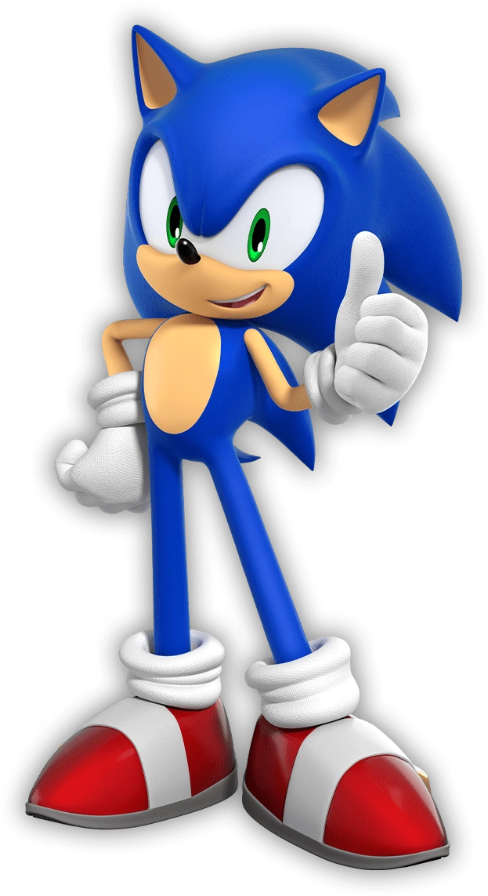

Loin dans l’océan, le Egg Saucer flottait. Il ressemblait à un déchet criard, trop technique, ou à un jouet de bain exagéré jeté dans le fleuve de la vie. Il était suffisamment éloigné de l’Asie pour que personne sur le continent ne remarque son apparition soudaine… du moins pour l’instant.
Dans la station de contrôle centrale du vaisseau de guerre, le Dr. Eggman
travaillait sans relâche sur un ordinateur, essayant d’évaluer ce qu’il avait perdu… et ce qu’il pouvait encore
récupérer. Dans des stations inférieures à la sienne, les assistants robotiques du docteur, Orbot et
Eggman : Alors, quels sont les dégâts ?
Demanda Eggman en analysant le Rayon Genesis sur son terminal. Jusqu’ici, il semblait réparable…
Orbot : D’après ce scan préliminaire, il semble que nous ayons perdu les Émeraudes du Chaos dans le crash.
Rapporta Orbot. Il se frotta la tête ronde en réfléchissant.
Orbot : Sans les émeraudes, nous n’avons aucun moyen de maintenir la capacité de vol. De plus, juste avant
l’accident, Amy Rose et Knuckles
l'Echidne
et Knuckles
l'Echidne ont attaqué notre dépôt de modules Egg
Pod, donc la production de Badniks est à l’arrêt.
ont attaqué notre dépôt de modules Egg
Pod, donc la production de Badniks est à l’arrêt.
Eggman : Évidemment.
Grogna Eggman.
Eggman : Quelle est notre position ? Combien de temps avant que le GUN envoie un agent ?
Orbot : Je… je ne suis pas sûr qu’ils en soient capables.
Répondit lentement Orbot, comme s’il était confus.
Orbot : J’ai intercepté des transmissions radio et satellite, et je ne reconnais aucune des données diffusées. De plus, j’ai examiné la position des étoiles : aucune constellation ne correspond à nos cartes stellaires actuelles. Je ne peux que supposer que nous avons été projetés un peu plus loin que d’habitude hors de la carte.
Eggman : Tu veux dire qu’on a été envoyés dans un autre monde ?
Grogna Eggman, se frappant le front.
Eggman : Pas encore ! J’en ai marre que ça arrive ! Ils n’ont jamais rien de bien à la télé…
Cubot : J’ai une bonne nouvelle, patron.
Intervint Cubot.
Cubot : Je ne trouve aucune trace de Sonic ou de ses amis à bord. Ils ont dû tomber et se noyer !
Eggman : Je croirai ça quand je le verrai.
Grommela Eggman.
Eggman : Non, même pas à ce moment-là. Une fois, j’ai envoyé ce parasite dans l’espace et il est quand même revenu ! Non, tant qu’on n’a pas les corps sous les yeux, on met Sonic, Tails, Knuckles et Amy comme portés disparus.
Un bip retentit, attirant l’attention du scientifique renégat et de ses assistants automatisés. Eggman appuya sur un bouton de son terminal pour en savoir plus. Son écran passa des diagnostics du Rayon Genesis à une carte radar, montrant à Eggman les formes de terres inconnues. Sur une petite île-nation, un point jaune vif clignotait très rapidement.
Eggman : Nous captons l’énergie d’une Chaos Emerald !
S’exclama le savant fou en ricanant, tout en joignant ses mains avec enthousiasme.
Eggman : Excellent !
Cubot : Vous voulez plutôt dire, "egg-cellent", non ?
Demanda Cubot joyeusement.
Il reçut en retour un regard irrité de la part d’Eggman, et un regard perplexe de la part d’Orbot. Honteux, le robot jaune se replia en mode cube.
Eggman : …Non.
Répondit sèchement Eggman, se tournant de nouveau vers son terminal.
Eggman : On dirait que ça vient de la plus grande île dans notre voisinage.
Orbot : Dois-je préparer votre Egg Mobile ?
Demanda Orbot en flottant jusqu’au Dr. Eggman.
Eggman : Non, je dois superviser les réparations du Egg Saucer. Pas question de vous laisser faire ça après le travail bâclé que vous avez fait sur mon Big Boy.
Grogna Eggman en lançant un regard noir à Orbot. Il fut quelque peu satisfait de voir le robot rouge se replier à son tour en mode orbe, honteux.
Orbot : Mais si vous n’y allez pas, que va-t-on faire ?
Demanda Orbot.
Orbot : Nous n’avons plus de Badniks disponibles.
Eggman esquissa un sourire en coin.
Eggman : Non, mais il me reste mes sous-boss.
Il entra une commande, et l’écran afficha une vue de l’un des hangars du Egg Saucer. La caméra parcourut plusieurs robots de grande taille et à l’apparence menaçante, avant de s’arrêter sur ce qui ressemblait à une grande soucoupe volante rouge.
Eggman : Je pense que je vais envoyer Arms.
Décida le docteur maléfique, tandis que la lumière de l’écran faisait briller ses lunettes d’un éclat sinistre.
C’était tôt le matin à la maison Emiya, et Shirou se réveilla en se sentant étonnamment plein
d’énergie. S’étirant, il retira son tee-shirt pour toucher les endroits de son corps où l’épée de Berserker — puis plus tard, les lames d’énergie qu’il
avait créées — avaient failli le réduire en morceaux. Il fut surpris, et un peu inquiet, de constater qu’il n’y
avait plus aucune trace des blessures — pas même la plus légère cicatrice.
— puis plus tard, les lames d’énergie qu’il
avait créées — avaient failli le réduire en morceaux. Il fut surpris, et un peu inquiet, de constater qu’il n’y
avait plus aucune trace des blessures — pas même la plus légère cicatrice.
Shirou : Eh bien, c’est sûrement mieux comme ça,
Se dit Shirou en remettant son t-shirt et en se levant.
Shirou : Les gens se poseraient des questions s’ils voyaient que j’ai été attaqué. Fuji - Nee piquerait une crise si elle pensait que je me bats, et Sakura s’inquiéterait aussi…
Penser à sa tutrice et autoproclamée « grande sœur », Fujimura Taiga, ainsi qu’à sa camarade de classe Matou Sakura, rappela à Shirou qu’il devait préparer le petit-déjeuner — les deux jeunes femmes venaient toujours chez lui le matin pour le repas : Sakura pour aider à le préparer, et Taiga pour en profiter gratuitement. Bien que cela ne le dérangeait pas vraiment, il était toujours un peu gêné de voir tout ce que Sakura faisait pour l’aider dans la maison.
Sur le chemin de la cuisine, Shirou s’arrêta devant une autre pièce pour jeter un œil à Saber . Le domaine Emiya était vaste, et il y avait
suffisamment de chambres pour que la Servant puisse y rester — ou s’y cacher, selon le cas. Afin de garder
secrète la position de Shirou en tant que Master dans la Guerre du Graal, il avait été décidé que le moins de
gens possible devaient être au courant de l’existence de Saber. Et comme, pour une raison inconnue, elle ne
pouvait pas se transformer en forme astrale comme les autres Servants, cela signifiait qu’elle devait rester
recluse dans une pièce vide lorsque des invités étaient présents. Saber n’appréciait pas du tout cet
arrangement, estimant qu’elle devait rester le plus proche possible de Shirou pour assurer sa protection. Elle
était même allée jusqu’à insister pour dormir dans la même chambre que lui, au grand embarras du mage… et à
l’amusement de Sonic. Il fallut beaucoup d’arguments — et finalement la menace d’utiliser un Sceau de
Commandement — pour convaincre Saber de se contenter de la chambre libre la plus proche de celle de Shirou.
. Le domaine Emiya était vaste, et il y avait
suffisamment de chambres pour que la Servant puisse y rester — ou s’y cacher, selon le cas. Afin de garder
secrète la position de Shirou en tant que Master dans la Guerre du Graal, il avait été décidé que le moins de
gens possible devaient être au courant de l’existence de Saber. Et comme, pour une raison inconnue, elle ne
pouvait pas se transformer en forme astrale comme les autres Servants, cela signifiait qu’elle devait rester
recluse dans une pièce vide lorsque des invités étaient présents. Saber n’appréciait pas du tout cet
arrangement, estimant qu’elle devait rester le plus proche possible de Shirou pour assurer sa protection. Elle
était même allée jusqu’à insister pour dormir dans la même chambre que lui, au grand embarras du mage… et à
l’amusement de Sonic. Il fallut beaucoup d’arguments — et finalement la menace d’utiliser un Sceau de
Commandement — pour convaincre Saber de se contenter de la chambre libre la plus proche de celle de Shirou.
Sonic, de son côté, avait fait tout le contraire en choisissant une chambre beaucoup plus éloignée. Quand on lui avait demandé pourquoi, le hérisson avait taquiné Shirou en disant qu’il ne voulait rien entendre "si jamais l’un de vous deux se sent seul", au grand embarras répété de l'intéressé.
À sa grande surprise (ou peut-être pas tant que ça), Shirou trouva Saber déjà réveillée, assise en seiza.
Saber : Bonjour, Shirou.
Le salua cordialement Saber.
Shirou : Bonjour, Saber.
Répondit Shirou.
Shirou : Tu es déjà levée.
Saber : Bien sûr. Si je dois te protéger, cela signifie que je dois être prête à tout moment en cas de
danger.
Expliqua Saber.
Saber : Je ne peux laisser à nos ennemis ne serait-ce que la moindre occasion d’attaquer.
Shirou : C’est… très professionnel de ta part...
Répondit prudemment Shirou.
Shirou : Mais ne va pas non plus jusqu’à t’épuiser. Je suis capable de me débrouiller un minimum.
Saber émit un petit hmm. Shirou ne savait pas si cela signifiait qu’elle prenait sa remarque au sérieux ou non.
Shirou : Bon, je dois préparer le petit-déjeuner pour Taiga et Sakura.
Reprit Shirou.
Il avait déjà parlé à Saber et Sonic de sa famille d’adoption.
Shirou : Tu pourrais aller vérifier que Sonic reste bien caché ?
Saber : Très bien.
Répondit Saber en se levant.
Tandis que Shirou se mettait au travail dans la cuisine, Saber se dirigea vers la chambre de Sonic. En regardant à l’intérieur, elle découvrit qu’au lieu d’utiliser le futon, le hérisson avait utilisé le drap que Shirou lui avait donné pour en faire un hamac suspendu entre deux murs. Un hamac dans lequel il dormait encore.
Saber se demanda comment ses grandes épines ne déchiraient pas le tissu, puis dit :
Saber : Sonic ?
Sonic : Mmh ?
Saber : Je suis désolée de te réveiller, mais je voulais te prévenir que le matin est arrivé, et que les
amies de Shirou vont bientôt arriver pour le petit-déjeuner.
Expliqua Saber.
Saber : Et te rappeler que tu dois rester caché. Si des gens ordinaires te voyaient…
Saber n’eut pas le temps de finir sa phrase que le hérisson — visiblement pas du matin — lui lança un oreiller en plein visage.
Sonic : J’ai compris, j’dois pas quitter ma chambre, laisse-moi dormir !
Taiga et Sakura arrivèrent peu après, et en un rien de temps, ce fut un matin comme les autres à la maison Emiya.
Pour Sakura, c’était le paradis. Depuis que son père l’avait abandonnée, sa vie n’avait été qu’un enchaînement d’abus physiques et de destructions émotionnelles. La seule lumière dans l’obscurité qu’elle appelait son existence était la tendre gentillesse qu’elle recevait chez Shirou. Bien qu’elle n’ait aucune illusion sur sa capacité à la sauver complètement de la cruauté des Matou, elle chérissait chaque instant passé avec lui. Mais au fond d’elle, elle savait qu’il ne s’agissait que d’une question de temps avant que les horribles vers magiques de son grand-père ne la tuent, comme ils l’avaient fait avec Oncle Kariya. Pourtant, dans cette cuisine, à cette table, elle pouvait toujours faire semblant que les horreurs de la magie étaient loin, et que la guerre du Graal en cours appartenait à un autre monde.
Mais ce matin-là, il lui était bien plus difficile de faire semblant. Elle pouvait ressentir, aussi faiblement soit-il, d’autres présences dans la maison. Elle comprit que, d’une manière ou d’une autre, son aîné avait invoqué un Servant, ou bien qu’il hébergeait un autre Master chez lui. Et puis, il y avait Avenger. Le "Servant" avait insisté pour « garder un œil sur elle » et l’avait suivie jusqu’à la maison de Shirou. Elle avait réussi à le convaincre (lui ?) de rester à l’écart. Plutôt que de se dématérialiser, le Servant s’était contenté de se cacher dans son ombre — un endroit approprié pour un être aussi sombre que lui. Pourtant, cela n’expliquait ni pourquoi Avenger était apparu… ni comment elle pourrait le faire partir.
Elle fit de son mieux pour ignorer les tremblements causés par la réaction des vers Matou à ces présences, au point qu’elle faillit ne pas entendre ce que disait Taiga.
Taiga : —t’as entendu ? Ils savent enfin qui tue tous ces gens !
Déclara Taiga entre deux bouchées.
Shirou : Vraiment ?!
S’exclama Shirou, levant les yeux de son bol de riz.
Taiga : Mmh-hmm, j’ai surpris grand-père en train d’en parler avec quelques-uns de ses hommes.
Le grand-père de Taiga, Fujimura Raiga, était le chef du clan yakuza local.
Taiga : En fait, ça doit passer à la télé en ce moment.
Taiga alluma la télévision et changea de chaîne pour tomber sur un journal télévisé.
« …Et les forces de l’ordre sont maintenant à la recherche d’un homme adulte, de forte carrure, aux cheveux
bleus et aux yeux rouges,
Disait la présentatrice.
« Il porterait également une sorte de lance rouge et une combinaison bleu foncé…
Shirou : C’est Lancer qu’ils décrivent !
Pensa Shirou,
l’esprit en ébullition.
Taiga : Et le plus bizarre.
Ajouta Taiga alors que le reportage passait aux actualités sportives.
Taiga : C’est que le témoin affirme aussi avoir vu… un tanuki ! Tu te rends compte ? Un tanuki ! C’est pas idiot ?
Shirou : Ouais… idiot, comme tu dis.
Répondit Shirou en essayant de garder une voix neutre, mais il était tendu intérieurement. Sonic lui avait raconté qu’il s’était battu contre Lancer pour sauver une personne sur laquelle le Servant avait tenté de se nourrir. Visiblement, ce passant apparemment anodin avait eu la présence d’esprit de prévenir la police après que Sonic ait attiré Lancer ailleurs. Heureusement, l’homme n’avait rien vu de trop extravagant… mis à part le « tanuki ». Shirou espérait sincèrement que ceux qui étaient chargés de préserver le secret de la magie trouveraient une solution pour effacer cette bizarrerie.
Kirei :Je n’arriverai pas à gérer ça.
Pensa Kotomine Kirei en regardant le reportage.
en regardant le reportage.
Il avait laissé Lancer affronter cette étrange créature surtout pour évaluer les capacités du hérisson, et pour mettre fin aux plaintes incessantes de Lancer sur le manque de combats. Eh bien, ils avaient tous deux eu ce qu’ils voulaient… et même plus. Heureusement, Lancer n’avait pas été tué sur le coup par l’explosion sonore et avait réussi à revenir en boitant jusqu’à l’église — bien que sourd. Et même si voir Lancer crier « QUOI ?! » toutes les deux minutes avait quelque chose de drôle, cela inquiétait Kotomine quant à l’évolution de la Guerre. Plus précisément, sur les mesures à prendre pour maintenir le secret. Un meurtre aléatoire ou des évanouissements pouvaient facilement être expliqués de façon banale. Mais des bangs supersoniques et un tanuki… même la vieille excuse de la fuite de gaz ne tiendrait pas.
Si les autorités comprenaient que quelque chose d’anormal se passait à Fuyuki, ce ne serait que le début d’une série d’ennuis — et Kotomine, en tant qu’arbitre de la Guerre du Graal, serait en plein dans l’œil du cyclone. Il pria Dieu (il était prêtre, après tout) pour que l’adversaire de Lancer reste discret et évite d’attirer davantage l’attention.
??? : Tu sembles préoccupé.
Kotomine tourna la tête vers l’homme blond qui s’approchait. Bel homme, habillé sobrement mais avec élégance, le seul détail remarquable chez lui était ses yeux : rouges comme le sang, tranchants comme des lames.

Cela faisait dix ans qu’il vivait sous son toit… un homme qui avait autrefois porté le titre d’Archer.
Kirei : Je tente simplement de déterminer comment ce nouveau développement affectera la Guerre.
Répondit le prêtre en désignant l’écran de télévision.
L’ancien Archer ricana.
Archer (?) : Ah, tu parles de l’adversaire de Lancer d’hier soir. J’ai été assez impressionné en entendant ce qui s’est passé. Penser qu’un simple esprit animal puisse rivaliser avec un Servant… Cela dit, il ne représente aucune menace pour moi.
Kotomine ne répondit pas, se tournant de nouveau vers la télévision. La journaliste évoquait maintenant « l’explosion mystérieuse » survenue la nuit dernière. Même si son partenaire était justifié dans sa supériorité affichée, Kotomine savait qu’un simple insecte pouvait abattre une bête gigantesque s’il piquait au bon endroit, avec un venin suffisamment puissant.
Ce… hérisson (était-ce vraiment le bon terme ?), malgré son attitude désinvolte, n’était manifestement pas un amateur. Il égalait Lancer sans effort apparent, et semblait immunisé contre les Noble Phantasms — ou du moins contre les armes blanches. Et la façon dont il avait terminé le combat… Kirei n’était même pas certain que l’armure dorée de son partenaire puisse résister à une onde de choc pareille.
Comme s’il avait senti ses doutes, Archer déclara :
Archer (?) : Si cela t’inquiète tant, pourquoi ne pas envoyer le Molosse sur ses traces ? Cela lui donnera de quoi s’occuper en attendant la fin de la Guerre.
Kirei hocha lentement la tête.
Kirei : Oui… mais ce sera pour la nuit…
Il eut un sourire machiavélique.
Kirei : Quand ses oreilles auront guéri.
Lancer : QUOI ?!
Le sourire de Kotomine s’élargit.
C’était toujours aussi drôle.
La tranquillité du domaine Emiya fut soudainement brisée par une rafale de vent, suivie d’une silhouette floue qui filait à une vitesse incroyable.
Taiga : JE SUIS EN RETARD !
Hurla Fujimura Taiga en dévalant la route, soulevant un nuage de poussière sur son passage.
Shirou secoua la tête. Certaines choses ne changeraient jamais, mais il était reconnaissant pour cette routine familière, surtout après les événements récents. Lui et Sakura lavèrent la vaisselle rapidement, chacun s’activant sans un mot de trop. Une fois terminé, l’heure était venue de partir pour l’école. D’ordinaire, Shirou aurait accompagné Sakura, mais ce matin-là, il devait préparer un second petit-déjeuner pour Saber et Sonic. Ne pouvant révéler cela à sa kouhai, il inventa une excuse à propos d’une réparation qu’il devait finir, et lui proposa d’y aller seule. Un peu déçue, Sakura accepta sans protester et s’éloigna. Tandis que Shirou l’observait partir, une étrange sensation lui traversa l’esprit… Avait-il rêvé, ou bien l’ombre de Sakura venait-elle de…
Sonic : Elle est sympa.
Shirou sursauta. Depuis quand Sonic était là ?!
Le hérisson le regarda avec un sourire malicieux.
Sonic : Alors, vous sortez ensemble, ou c’est déjà les fiançailles ?
Les joues de Shirou rosirent légèrement.
Shirou : Ce n’est pas comme ça. C’est juste une amie.
Sonic : Qui vient tous les jours te faire à manger ?
Demanda Sonic d’un ton espiègle.
Shirou : Oui.
Répondit Shirou, un peu trop vite.
Shirou : Je pense qu’elle a des problèmes familiaux, alors je l’ai laissée venir ici. Et pour ton information, je ne la laisse pas toujours préparer les repas. Je préfère m’en occuper moi-même.
Sentant l’agacement grandir dans la voix de Shirou, Sonic leva les mains en signe d’apaisement.
Sonic : Wow, du calme, mec. Je faisais que taquiner.
Alors qu’ils retournaient vers la cuisine, Sonic lança une dernière remarque :
Sonic : Mais si tu veux mon avis, elle veut clairement plus qu’une simple amitié.
Shirou s’arrêta une demi-seconde, mais reprit sa marche sans un mot. C’était tentant de croire ça… mais il n’y avait aucune chance que Sakura le voie autrement qu’un simple senpai. Et puis, sortir avec une élève de classe plus jeune, c’était mal.
Le second petit-déjeuner fut préparé rapidement. Shirou ne fit rien de sophistiqué, et Sonic l’aida à faire la vaisselle. Une fois la table dressée, Shirou s’apprêtait à quitter la pièce quand Saber prit la parole :
Saber : Shirou, je finirai rapidement.
Dit-elle calmement.
Saber : Je ne voudrais pas que tu sois en retard.
Intrigué, Shirou se retourna vers sa Servant.
Shirou : Qu’est-ce que tu veux dire ?
Shirou : Je veux dire que, pour te protéger, je t’accompagnerai à ton école.
Shirou : Quoi ?!
Sonic éclata de rire. Face au regard assassin que Shirou lui lança, il se reprit aussitôt, mais conserva ce sourire taquin accroché au visage. Saber, quant à elle, resta impassible tout en mangeant, comme si ce qu’elle venait de dire allait de soi.
Shirou : Saber, je ne peux pas me montrer à l’école avec une fille étrange qui me suit !
Insista Shirou.
Shirou : Ça attirerait trop l’attention !
Surtout qu’il venait de dire à Sakura de partir sans lui. S’il arrivait à l’Académie Homurahara accompagné d’une femme aussi belle, les rumeurs n’en finiraient plus.
Mais Saber refusa de céder.
Saber : Ce n’est pas une raison valable, Shirou,
Dit-elle.
Saber : Un ennemi pourrait t’attaquer à tout moment, même là-bas. Il est important que je reste à tes côtés pour assurer ta protection.
Shirou : Non, ça ira.
Répondit Shirou.
Shirou : La Guerre est censée rester secrète, tu te souviens ? Personne ne commencera un combat en plein jour
dans un lieu public. Seules
Tohsaka -
san, le Maître de Lancer, et Illya
-
san, le Maître de Lancer, et Illya savent que je suis un Maître, donc je peux
facilement me fondre dans la masse. Mais si j’arrive avec une nouvelle amie — une étrangère, en plus — un
autre Maître pourrait vouloir enquêter et découvrir la vérité.
savent que je suis un Maître, donc je peux
facilement me fondre dans la masse. Mais si j’arrive avec une nouvelle amie — une étrangère, en plus — un
autre Maître pourrait vouloir enquêter et découvrir la vérité.
À en juger par la moue obstinée qui commençait à apparaître sur son visage pourtant parfait, Shirou devina qu’elle n’allait pas accepter ce qui était (à ses yeux) un argument infaillible. Il décida donc de sortir sa carte maîtresse.
Shirou : Il y a une autre raison pour laquelle je veux que tu restes ici.
Disait Shirou en prenant Saber à part pour que Sonic ne puisse pas entendre.
Shirou : On a dit à Sonic qu’il ne pouvait pas sortir en public, mais je pense que c’est le genre de personne qui ferait quand même ce qu’il veut, peu importe les règles. Tu dois t’assurer qu’il reste à l’intérieur. Tu peux faire ça pour moi ?
Saber jeta un œil vers Sonic. Le hérisson en question feuilletait paresseusement le programme télé avec une expression blasée. Leurs regards se croisèrent, et il lui adressa un sourire en coin. Elle ne pouvait nier ce que Shirou disait, car au fond, elle partageait les mêmes soupçons quant au caractère de Sonic. Mais elle était toujours réticente à l’idée de laisser Shirou seul. L’affrontement contre Berserker lui avait fait soupçonner que son Maître avait un sérieux complexe suicidaire.
Shirou : Écoute, je te promets que je serai de retour avant la tombée de la nuit.
Poursuivit Shirou.
Shirou : Essaie juste de garder Sonic caché jusque-là.
Saber soupira.
Saber : Très bien. Mais tu dois me promettre que si jamais tu rencontres un danger, tu m’invoqueras immédiatement avec un Sceau de Commandement.
Shirou jeta un œil aux marques sur sa main.
Saber : Je croyais que ça servait seulement à te donner des ordres.
Saber : Ce sont des ‘Ordres Absolus’, Shirou.
Expliqua Saber.
Saber : Si tu m’ordonnais d’apparaître à tes côtés, leur pouvoir me téléporterait instantanément.
Shirou hocha la tête.
Shirou : Je vois. Mais je n’ai que trois de ces Ordres Absolus, non ?
Saber : Exactement.
Confirma Saber.
Saber : C’est pourquoi je n’accepterai ça qu’une seule fois. Mais tu dois tout de même rester prudent. Ne fais rien qui pourrait te faire remarquer. Comme tu l’as dit, il est peu probable qu’un autre Maître ou Servant attaque en public, mais le monde est rempli d’imbéciles imprévisibles.
Shirou adressa un sourire rassurant à sa Servante.
Shirou : Je vais bien aller, Saber. Qu’est-ce qui pourrait bien arriver ?
Saber était loin d’être aussi confiante que Shirou, et son expression le montrait bien. Néanmoins, elle se contenta de le regarder quitter la maison. Une bourrasque de vent plus tard, Sonic se retrouva à ses côtés, observant lui aussi le dos de Shirou qui s’éloignait.
Sonic : Ce gars est en plein dans une guerre magique et il dit un truc pareil.
Commenta le hérisson.
Sonic : Tu es inquiètes ?
Saber : Plus que tu ne peux l’imaginer.
À l’Académie Homurahara, des foules d’élèves couraient dans tous les sens, essayant d’arriver à l’heure au cours qui leur avait été assigné. Rin Tohsaka ne faisait pas partie de ces élèves. La cheffe du (très singulier) clan Tohsaka ne se rabaisserait jamais au point d’être en retard en cours. Elle s’était levée tôt, même si elle n’avait pas vraiment réussi à dormir de toute façon. Le choc de ce qui s’était passé la nuit précédente l’avait tenue éveillée. Pas seulement cette créature qui avait affronté Lancer, mais aussi le kitsune qui avait écrasé un avion dans son jardin.
Un kitsune. Elle pensait que ces esprits animaux avaient disparu du monde depuis longtemps (Archer prétendait qu’il y avait quelque part en ville un restaurant tenu par des esprits félins, mais il n’avait jamais pu donner l’adresse exacte — probablement une blague). Elle pensait que la seule manière pour quelqu’un de rencontrer un kitsune serait d’invoquer Tamamo no Mae en tant que Servant. Après avoir ramené le pilote blessé dans son manoir pour le soigner, elle l’avait interrogé avec rigueur. Ce qu’elle avait appris était une histoire insensée sur des combats contre des robots tueurs venus d’une autre dimension. Évidemment, ce devait être un mensonge, en guise de couverture pour dissimuler ses véritables origines. Les kitsune étaient réputés pour être des farceurs, après tout. Mais c’était quand même un peu insultant qu’il n’ait pas inventé quelque chose d’un peu plus crédible. Le voyage entre les mondes faisait partie des Vraies Magies. Il n’y avait aucune chance qu’une machine puisse réaliser un tel exploit, même avec des… pierres précieuses enchantées (comment les avait-il appelées ? « Joyaux du Chaos », ou quelque chose comme ça ?) insérées dedans. La technologie ne pouvait pas canaliser la puissance de la sorcellerie des gemmes, c’était un fait.
Rin fut tirée de ses pensées en voyant un visage familier. Sakura Matou se dirigeait vers le bâtiment de l’école, et lorsque leurs regards se croisèrent, une tension subtile s’installa. Sakura semblait plus abattue que d’habitude, tandis que le visage de Rin se durcissait comme de la pierre.
Rin : Bonjour, Matou-san.
Lança Rin sans ciller.
Sakura : Euh… Bonjour, Tohsaka-sempai.
Répondit Sakura en détournant les yeux.
Et sur ces mots, Sakura continua son chemin. Rin la regarda s’éloigner, ressentant une légère douleur dans l’âme.
De tels échanges étaient tout ce qu’il restait à dire sur la relation entre les deux élèves. Autrefois, elles avaient été proches, il y a de nombreuses années, mais à présent, un mur émotionnel les séparait. Au fond d’elle-même, Rin souffrait de l’existence de ce mur. Mais elle avait décidé depuis longtemps que la seule façon de gérer cette douleur était d’ériger un autre mur autour de son propre cœur. Pendant des années, cette stratégie avait très bien fonctionné, lui permettant de se concentrer sur son entraînement à la sorcellerie. Mais, comme elle allait bientôt l’apprendre, une telle tactique faisait parfois passer certains facteurs importants entre les mailles du filet.
Mais pas Emiya Shirou.
Elle le vit courir vers l’école depuis l’une des fenêtres. Elle remarqua également que Saber n’était pas avec lui.
Rin : Est-ce que cet idiot est vraiment venu tout seul ?
Pensa-t-elle, stupéfaite.
Rin : Il ne se rend pas compte qu’un Master sans Servant, exposé en plein jour, c’est comme une cible géante avec une flèche pointée dessus ?
Puis elle se rappela qu’ Archer avait dit exactement la même chose quand elle
lui avait ordonné de rester au manoir pour surveiller leur invité poilu. Cela la rendit encore plus contrariée,
car elle se rendit compte qu’elle se comportait aussi bêtement que Shirou. Elle fut alors tentée — très
sérieusement — d’aller le confronter pour lui passer un savon, ne serait-ce que pour évacuer sa propre
confusion, sa colère, et tout un flot d’émotions accumulées derrière son mur intérieur. Mais elle savait aussi
que se comporter différemment avec Shirou éveillerait des soupçons. Elle devrait faire preuve de subtilité.
avait dit exactement la même chose quand elle
lui avait ordonné de rester au manoir pour surveiller leur invité poilu. Cela la rendit encore plus contrariée,
car elle se rendit compte qu’elle se comportait aussi bêtement que Shirou. Elle fut alors tentée — très
sérieusement — d’aller le confronter pour lui passer un savon, ne serait-ce que pour évacuer sa propre
confusion, sa colère, et tout un flot d’émotions accumulées derrière son mur intérieur. Mais elle savait aussi
que se comporter différemment avec Shirou éveillerait des soupçons. Elle devrait faire preuve de subtilité.
Plus tard dans la journée, Shirou la croisa en allant en classe.
Shirou : Tohsaka, j’ai quelque chose à te dire.
Commença-t-il.
Shirou : C’est à propos de ce qu’on a vu hier soir…
Il s’arrêta net. Tohsaka Rin venait de lui lancer un regard si brûlant qu’il crut que sa tête allait exploser. Il se rendit compte par la suite qu’il y avait de très fortes chances que Rin puisse réellement faire exploser sa tête, et il en eut assez peur.
Rin : On en parlera plus tard.
Dit-elle doucement.
Shirou la regarda s’éloigner. Il se demanda s’il avait fait quelque chose de mal.
Archer : Quelque chose ne va pas ?
Demanda Archer.
Après le départ de Rin, le petit kitsune, qui se faisait appeler Tails, avait repris les réparations de son avion. Archer était cruellement tenté de l’aider — combien de fois avez-vous l’occasion de bricoler un biplan aussi avancé ? — mais il savait qu’il devait rester vigilant et ne pas se laisser distraire. Même si le manoir des Tohsaka et ses terrains étaient protégés par un champ de barrière magique, un ennemi assez puissant pouvait le franchir.
Tails poussa un soupir.
Tails : Les dégâts sur le Tornado sont bien pires que ce que je pensais. Plusieurs morceaux de la coque extérieure se sont détachés. En plus, le moteur est vraiment amoché. Je pourrais bricoler un peu, mais rien ne garantit que ça tiendra quand l’avion redécollera. Pour tout réparer, il me faut des pièces.
Archer : Tu n’en trouveras pas ici, je peux te le garantir.
Répondit Archer.
Archer : La famille Tohsaka a toujours été… disons, très traditionnelle. Et Rin est déterminée à préserver leurs traditions, peu importe à quel point elles sont dépassées. L’exclusion de la technologie en fait partie.
Tails : Ouais, j’avais deviné.
Acquiesça Tails.
Tails : J’ai pas vu le moindre appareil électronique dans la maison… même pas un téléphone ou une télé.
Tails rangea la clé qu’il tenait et s’assit dans l’herbe. Archer pouvait voir qu’il était abattu. Et c’était facile à comprendre. Tails s’inquiétait pour ses amis, mais il ne pouvait pas partir à leur recherche avant la nuit. Il espérait sans doute se changer les idées en travaillant sur son avion. Mais ce plan venait de tomber à l’eau.
Archer : Rentrons.
Disait Archer.
Tails : Si tu ne peux pas réparer ton avion, il n’y a plus de raison de rester dehors. Personne ne vient ici, mais on ne peut pas courir le risque que quelqu’un te voie. Et ne t’en fais pas pour tes amis. S’ils sont malins, eux aussi resteront cachés.
Tails : Knuckles et Amy, peut-être.
Admit Tails, en sortant quelque chose du cockpit de son avion abîmé.
Tails : Mais Sonic n’a jamais été du genre discret. Je parie qu’il est déjà passé aux infos.
Archer : J’espère que non.
Pensa Archer.
Archer : Rin est déjà assez stressée à force de ne pas croire à l’histoire de Tails. Si un animal anthropomorphe commence à apparaître en public, elle risque de faire une crise.
Et aussi amusant que cela aurait été pour Archer, les conséquences à long terme seraient catastrophiques. Si l’Association des Mages apprenait que des événements pouvant révéler l’existence de la sorcellerie se produisaient à Fuyuki, elle commencerait à agir. Et à agir de façon génocidaire. Son père adoptif lui avait raconté une fois comment des exécuteurs de l’Association avaient rasé un village entier à cause d’une épidémie de vampirisme. Plutôt que d’aider la population, ils avaient simplement tué tout le monde, aussi facilement que l’on exterminerait une ruche d’insectes pour enrayer une infestation.
Archer : Je ne peux qu’espérer que la situation n’en arrivera pas là…
Quand Bazett se réveilla, elle était confuse. Et encore endormie. Mais surtout confuse. Son dernier souvenir cohérent était celui de son bras tranché et d’avoir été laissée pour morte dans une ruelle sombre. Elle avait essayé de soigner la blessure du mieux qu’elle pouvait, mais ce « mieux » n’avait fait que retarder l’inévitable — elle était une combattante, pas une soigneuse, et elle avait perdu trop de sang. Elle avait juste eu assez de force pour attendre la mort. Ses pensées étaient devenues floues après cela, incapable de suivre le fil du temps… jusqu’à ce qu’elle ressente une vive chaleur parcourir son corps, avant que l’obscurité ne l’emporte.
Mais à présent, elle était de retour dans la lumière. Au début, elle pensa qu’elle était au paradis, mais les perfusions reliées à un de ses bras la détrompèrent rapidement.
Attendez... son bras !
Bazett réalisa alors qu’elle avait de nouveau deux bras ; celui qui avait été tranché avait repoussé. Mais comment ? Régénérer de la chair était une capacité qui dépassait largement les compétences d’un Exécuteur. Il fallait une quantité énorme de mana pour y parvenir.
En y repensant, Bazett comprit que la « décharge brûlante » qu’elle avait ressentie plus tôt devait être un afflux de mana. Mais d’où venait-il ? Les lignes telluriques de Fuyuki n’avaient pas autant de puissance — en plus, elles étaient utilisées pour la Guerre du Saint Graal. Était-ce l’œuvre d’un autre Servant ou d’un autre Maître… et si oui, pourquoi ?
« Mademoiselle McRemitz ?
Bazett fut tirée de ses réflexions par une voix masculine. Elle vit un homme adulte en blouse blanche — un médecin, sans doute — entrer dans sa chambre, un clipboard à la main.
« Je suis heureux de voir que vous vous êtes réveillée.
Dit-il.
« Nous étions inquiets de ne pas vous voir vous en sortir.
Bazett : Merci de votre sollicitude.
Répondit Bazett, avant qu’une idée ne lui vienne.
Bazett : Pourriez-vous me dire où je me trouve ?
« Vous êtes à l’hôpital général de Fuyuki, Mademoiselle McRemitz. Je suis le docteur Twice Pierceman.
Disait le médecin.
Pierceman : Vous avez été amenée ici par…
Il s’interrompit, visiblement mal à l’aise.
Pierceman : Bon, nous parlerons de cela un peu plus tard. J’ai d’abord quelques inquiétudes concernant votre état.
Il ne voulait pas parler de la personne qui l’avait amenée ? C’était préoccupant. Bazett supposa qu’un passant l’avait trouvée et transportée ici. Mais une autre question se posa à elle : cela s’était-il produit avant ou après que son bras ait repoussé ?
Pierceman : À votre arrivée, vous aviez perdu plus d’un litre de sang.
Disait le Dr Pierceman en consultant son dossier.
Pierceman : 2,1 litres, pour être précis. Franchement, c’est un miracle que vous ayez survécu assez longtemps pour qu’on procède à une transfusion. Ce qui est étrange, c’est que nous n’avons pas réussi à déterminer comment vous aviez pu perdre autant de sang. Vous n’aviez aucune blessure assez grave pour cela — seulement des coupures superficielles, et…
C’est à ce moment-là que les yeux du docteur devinrent vides.
Bazett : Il n’y a rien d’anormal dans mon état.
Disait Bazett, tentant d’ignorer le léger mal de tête qui commençait à poindre. Pratiquer l’hypnose juste après avoir frôlé la mort, c’était risqué, mais en tant qu’Exécutrice de l’Association des Mages, elle avait le devoir d’assurer le secret de la magie.
Pierceman : …Oui, bien sûr...
Répondit Pierceman, notant quelque chose sur son dossier.
Pierceman : Maintenant, à propos de votre ami…
Bazett : Ami ? Je n’ai aucun ami dans cette ville.
Pensa Bazett.
Les seules personnes qu’elle connaissait à Fuyuki et qui auraient pu se soucier de son état étaient Kirei Kotomine, et son Servant, Lancer. Rien que de penser à ces deux-là remplissait Bazett de colère et de tristesse à parts égales. Mais surtout de colère. C’était Kotomine qui l’avait attaquée, volant les Sceaux de Commandement qui liaient Lancer à elle. Elle en était certaine. Et elle était tout aussi certaine que les récupérer serait une forme de plaisir sadique.
Et alors que Bazett bouillonnait intérieurement, le Dr. Pierceman poursuivit :
Pierceman : …Nous l’avons placée dans une chambre privée pour éviter d’effrayer les autres patients, et j’ai demandé aux membres du personnel qui l’ont vue de ne rien dire, mais je… je ne sais tout simplement pas quoi en penser.
Bazett : De quoi parlez-vous ?
Demanda Bazett, intriguée par le ton embarrassé du médecin. Était-ce un Apôtre des Morts qui l’avait amenée ici
?
Pierceman soupira et fit un geste vers la porte. Une petite silhouette apparut bientôt sur le pas de celle-ci. Elle mesurait probablement moins de la moitié de la taille totale de Bazett. Elle portait une petite robe rouge, des bottes, des gants blancs et un serre-tête, et était donc probablement une fille. Bazett ne savait pas trop quoi penser de sa bienfaitrice apparente, seulement que son apparence lui rappelait ces esprits félins qui tenaient un café où elle s’était arrêtée une fois avant d’invoquer Lancer.
Lorsque Amy Rose vit Bazett assise dans son lit, elle sourit
et poussa un soupir de soulagement :
Amy : Ouf, tu vas bien.
Bazett : C’est toi qui m’as amenée ici ?
Demanda Bazett, essayant d’assimiler ce qui se passait.
C’était beaucoup à encaisser. Est-ce que… ce personnage de dessin animé était la raison pour laquelle elle avait échappé à la mort ?
Amy : Oui.
Répondit Amy en s’approchant du lit de l’Irlandaise.
Amy : Je t’ai trouvée dans une ruelle la nuit dernière. Je m’appelle Amy Rose, et toi tu t’appelles… Bazzy ?
Bazett : Bazett
Corrigea l’Exécutrice. Et, parce que cela la préoccupait, elle demanda :
Bazett : Est-ce que quelqu’un d’autre t’a vue la nuit dernière ?
Amy : Je ne crois pas…
Murmura Amy, l’air incertaine.
Amy : Pourquoi ? C’est un problème ? Le Dr. Pierceman m’a posé la même question…
Cela rappela quelque chose à Bazett. Elle se tourna vers le bon docteur et lui envoya une autre suggestion hypnotique :
Bazett : Faites venir tous les membres du personnel qui l’ont vue… non, faites-les venir un par un.
Elle allait devoir hypnotiser tout l’hôpital pour qu’on ignore l’apparence d’Amy. Mieux vaut prévenir que guérir, après tout.
Dr. Pierceman acquiesça, les yeux à nouveau vides, et quitta la pièce. Une fois la porte refermée derrière lui, Amy adressa un regard étrange à Bazett.
Amy : C’était quoi, ça ?
Demanda la hérissonne rose.
Bazett soupira.
Bazett : Mademoiselle Rose… Amy, je crois qu’il va falloir qu’on discute.
Saber était assise à la table du salon de la maison Emiya. Dans une autre vie, elle aurait profité de ce « temps libre » pour dormir dans sa chambre afin de mieux recharger son Mana. Mais la nécessité de chaperonner Sonic l’obligeait à rester éveillée. Elle n’avait aucun doute que le hérisson aurait « pris la poudre d’escampette » si sa surveillante s’était assoupie.
Non loin de là, Sonic regardait la télévision, allongé sur le côté, la tête posée sur un bras tout en changeant paresseusement les chaînes avec la télécommande.
Sonic : Nul… nul… nul…
Marmonna Sonic, avant de reposer sa tête sur le sol. Après un moment, il se leva d’un bond et quitta la pièce en
un éclair.
Heureusement, les sens de Saber étaient suffisamment aiguisés pour qu’elle n’ait pas besoin de le suivre. Elle pouvait encore sentir sa présence dans l’enceinte de la propriété. À en juger par le bruit de ses pas, il se dirigeait vers l’abri de stockage.
Cela rappela à Saber le souvenir d’Irisviel, son amie pendant la Quatrième Guerre du
Saint Graal. Elle avait toujours été pleine de joie. Lorsqu’elles étaient arrivées pour la première fois au
Japon, Iri avait été si enthousiaste… et tout aussi ravie de découvrir cette maison. Cela avait toujours été une
énigme pour Saber : comment une personne aussi chaleureuse et lumineuse pouvait-elle être tombée amoureuse d’un
mage aussi froid et brisé que Kiritsugu ?
?
Et d’ailleurs… qu’aurait pensé Iri de Shirou ? Est-ce que ces deux idéalistes se seraient entendus ?
Saber fut tirée de ses pensées par le bruit de pas : Sonic était revenu, tenant quelque chose dans ses bras. En un éclair, il fut devant le téléviseur, déjà en train de brancher des câbles. Il se retourna et leva un petit appareil noir pour le montrer à Saber.
Sonic : J’ai trouvé ça dans le cabanon dehors.
Expliqua-t-il.
Sonic : Je peux pas croire que Shirou ait une Mega Drive ! Ça fait des années que j’en ai pas vu
une…
! Ça fait des années que j’en ai pas vu
une…
Ah. Une console de jeux vidéo. Saber savait ce que c’était, grâce aux connaissances que le Saint Graal offrait à chaque Servant sur l’époque de leur invocation.
Sonic : Il y avait même des jeux avec !
Poursuivit Sonic, disparaissant et réapparaissant avec une boîte. Il en sortit plusieurs cartouches.
Sonic : Voyons voir… Clayfighters , Vectorman , Acro… oh, Altered Beast !
Sonic inséra la cartouche dans la console et alluma le tout. En une seconde, la télévision retentit d’un « SE-GA ! » suivi du célèbre logo bleu (familier à Sonic), puis de l’écran-titre du jeu. Il ne fallut pas longtemps avant que le hérisson ne soit complètement absorbé par le jeu, et que la pièce se remplisse de sons électroniques rétro.
Hormis le bruit, Saber trouvait cette situation des plus satisfaisantes. Si Sonic était concentré sur le jeu, il serait moins enclin à tenter une escapade nocturne. Elle pourrait ainsi se concentrer davantage sur la régénération de son Mana et la guérison après son affrontement contre Lancer et Berserker. Mais malgré tout cela, les yeux du chevalier commencèrent doucement à dériver vers l’écran…
Des heures plus tard, Saber mourut. Encore.
Sonic secoua la tête avec tristesse alors que le compte à rebours du jeu apparaissait à l’écran.
Sonic : Tu n’y arrives vraiment pas. C’est quoi, la cinquième fois que le boss te bat ?
Saber grimaça en appuyant sur le bouton start de sa manette.
Saber : Je commence toutefois à comprendre ses tactiques. Je suis confiante que ce prochain combat tournera à mon avantage.
Sonic : Ouais, c’est bon à savoir...
Répondit Sonic en tendant la main vers la manette.
Sonic : Mais c’est mon tour, et… Attends, quelle heure il est ?
Saber détourna les yeux de l’écran. Jetant un coup d’œil par la fenêtre, elle vit que le soleil se couchait. Elle n’en croyait pas ses yeux. Où était passé le temps ? Avait-elle été tellement absorbée par le jeu vidéo que même ses sens l’avaient abandonnée ?
Sonic : Presque la nuit.
Constata Sonic avec un sourire, se levant en s’étirant.
Sonic : L’heure de sortir en ville !
Ah, c’est vrai. Ils avaient convenu de laisser Sonic sortir une fois la nuit tombée. Puis les yeux de Saber commencèrent à lui piquer, et elle se rendit compte qu’elle n’avait pas cligné des yeux depuis plus de deux heures. Pensant qu’elle avait peut-être passé un peu trop de temps sur le jeu, elle appuya sur le bouton d’alimentation de la console Genesis.
« Une soucoupe volante a été aperçue entrant dans la ville depuis les quais, aux alentours de…
Annonçait une présentatrice à la télévision.
Sonic et Saber tournèrent rapidement la tête vers l’écran. Une image floue d’un objet rouge et tournoyant apparut à l’écran.
« …Toutes les tentatives de communication avec l’appareil sont restées vaines. Les autorités recommandent à tous les citoyens de rester chez eux et de ne pas sortir. Si quelqu’un a des informations, veuillez appeler…
Sonic jeta un regard à Saber.
Sonic : Vous avez des soucoupes volantes, dans votre monde ?
Saber secoua la tête sans quitter des yeux l’écran.
Sonic claqua des doigts.
Sonic : Alors Eggman n’a pas perdu de temps pour s’installer. C’est sûrement un de ses robots.
Saber ressentit soudain une urgence pressante. Se levant, elle déclara :
Saber : Je dois aller voir Shirou. Il n’est peut-être pas au courant.
Et connaissant Shirou, il courrait sans hésiter vers le danger que ce robot pouvait représenter.
Sonic : Eh bien, il est un peu tard.
Nota Sonic en se frottant le menton, pensif.
Sonic : Il doit encore être à l’école.
Saber : Alors c’est là que je dois aller.
Déclara Saber.
Il y eut une lueur, et sa combinaison d’armure apparut autour de son corps. On ne savait jamais quand un combat pouvait éclater, et la seconde nécessaire à se transformer pouvait être fatale.
Sonic : Bel effet.
Sourit Sonic, tendant la main.
Sonic : Tu veux que je t’y emmène, gente dame ?
Saber le regarda, surprise.
Saber : Quoi ?
Sonic : Je t’emmène chez Shirou avant de m’occuper de ce robot.
Expliqua Sonic.
Sonic : Avec ma vitesse, on devrait y être en quelques minutes.
Saber : Ce ne sera pas nécessaire,
Répondit fièrement Saber en marchant vers la porte.
Saber : Ma propre vitesse n’est pas à sous-estimer. En passant par les toits, je peux atteindre l’école de Shirou en un rien de temps.
Sonic : Mais… tu sais où elle est, au moins ?
Demanda Sonic en la suivant.
Saber s’arrêta. En y repensant, Shirou ne lui avait jamais mentionné quel chemin il empruntait pour aller à son école.
Sonic : Quand je fuyais la ville avec Lancer, on est passés près d’un endroit appelé Académie Homurahara.
Poursuivit Sonic.
Sonic : Je peux me tromper, mais l’une des deux femmes de ce matin en a parlé… la plus bruyante, je crois.
À ce moment-là, les deux héros étaient déjà dehors. Un observateur extérieur aurait trouvé la scène plutôt comique : l’un était une jeune fille vêtue d’une robe bleue et d’une armure. L’autre, une sorte d’animal humanoïde à la tête hérissée, ne lui arrivant qu’à la poitrine — en baskets. Les yeux de la fille brillaient d’un éclat semblable à de l’acier fraîchement forgé : durs mais ardents. Les yeux du hérisson, eux, évoquaient davantage du caoutchouc brillant recouvert de paillettes. Pour quelqu’un de l’extérieur, ils n’avaient rien des héros de légende qu’ils prétendaient être. On les aurait plus facilement imaginés dans un anime… ou une fanfiction.
(L’auteur tient à s’excuser pour ce petit moment méta.)
Saber envisagea ses options. Elle pouvait partir seule, en espérant que la direction qu’elle choisirait au hasard la mènerait jusqu’à Shirou. Ou bien faire confiance aux indications fournies par un squatteur autoproclamé voyageur dimensionnel. Si aucune option n’était particulièrement rassurante, la seconde avait l’avantage de lui permettre de surveiller Sonic encore un peu.
Saber : Très bien.
Acquiesça Saber en fermant les yeux.
Saber : Je te suivrai par les toits. Reste dans l’ombre pour ne pas être vu, je te suivrai grâce à ton—
La Servante n’eut pas le temps de terminer sa phrase. En une seconde, Sonic l’attrapa dans ses bras et fonça à toute vitesse dans les rues. Plus tard, le hérisson commenta que, même avec son armure, Saber n’était pas bien lourde à porter.
Heureusement, personne ne vit les deux compères filer vers l’Académie Homurahara. Les rares témoins n’aperçurent qu’une sorte de traînée bleue filant à toute vitesse, accompagnée des cris d’une jeune fille invisible. Fort heureusement pour Kotomine, ce genre d’apparition était facilement attribué… à une fuite de gaz.
Comme le manoir Tohsaka ne possédait pas de télévision, Archer et Tails n’avaient pas entendu parler d’une possible attaque de robot. Néanmoins, Archer était toujours inquiet pour sa Maîtresse, encore seule et sans protection à l’école. Techniquement, Shirou était avec elle, mais il était plus probable que ce soit lui qui ait besoin de sa protection.
Le problème était qu’il avait reçu l’ordre de rester sur place pour surveiller Tails. Et bien que les Archers possèdent une compétence d’« Action Indépendante » leur permettant d’agir sans l’approbation de leur Maître, l’Esprit Héroïque n’était pas certain de vouloir s’attirer les foudres de Rin aussi tôt dans la guerre.
Tails : Euh, Archer ?
Archer fut tiré de ses pensées et baissa les yeux. Tails s’approchait de lui, tenant une sorte de petit ordinateur sous le bras.
Tails : Il commence à faire nuit.
Dit le renard.
Tails : Je voulais te prévenir que je pars chercher mes amis.
Aïe. Voilà un problème. Même si lui et Rin avaient dit que Tails pourrait sortir la nuit, le vrai plan était de l’hypnotiser à l’aide de la magie de Rin une fois qu’elle serait rentrée. Malheureusement, elle avait décidé de rester à l’école parce que « Shirou avait quelque chose à lui dire ». Archer se demanda ce que ça pouvait bien être, d’assez important pour qu’elle compromette ses propres plans.
D’un autre côté… peut-être qu’ils n’étaient pas compromis. Arborant un sourire amical, Archer répondit :
Archer : Très bien. Je comptais justement sortir moi aussi.
Tails : Pourquoi ?
Archer : Je suis inquiet pour Rin. Elle n’est toujours pas rentrée de l’école.
Expliqua Archer.
Archer : Il y a des rumeurs sur un tueur en série qui rôde — et on dit qu’il s’en prend aux jeunes filles.
(À l’église de Fuyuki, Lancer éternua.)
Tails : Oh non !
S’écria Tails, ses deux queues se dressant de surprise.
Tails : Et Rin est toute seule dehors ?! On doit aller la chercher !
Archer : Tes amis sont probablement autant en danger que Rin.
Fit remarquer Archer.
Tails haussa les épaules.
Tails : Oh, ne t’en fais pas pour eux. Avec la vitesse de Sonic, les poings de Knuckles et le marteau d’Amy, je plains tout cinglé qui essaieraient de les attaquer.
Archer : Dommage que tu ne connaisses rien aux Servants ni à la sorcellerie, gamin.
Pensa Archer en quittant le domaine du manoir en compagnie de Tails.
En temps normal, il se serait dématérialisé pour éviter d’être vu. Mais maintenant qu’il avait Tails avec lui, il devait rester matériel pour pouvoir l’aider à se cacher des civils qu’ils pourraient croiser.
En marchant, Archer ne put s’empêcher de remarquer le dispositif que Tails portait avec lui. De temps à autre, le renard l’allumait et appuyait sur quelques boutons.
Archer : Qu'est ce que c'est ?
Demanda l’archer, sincèrement curieux.
Tails : Oh, ça, c’est mon Miles Electric.
Expliqua Tails en tendant l’écran vers Archer. Il montrait une sorte de grille verte sur fond noir, avec
quelques points jaunes clignotants ici et là.
Tails : C’est un ordinateur multifonctions que j’ai fabriqué. J’essaie de le convertir en détecteur de Chaos Emeralds.
Archer : Ces gemmes qui vous ont envoyés ici ?
Demanda Archer, se rappelant à quel point Rin avait eu l’air intéressée lorsque Tails les avait mentionnées. Même si elle restait sceptique sur le reste de l’histoire du renard, elle semblait vraiment espérer que cette partie soit vraie. Sans doute qu’un moyen d’obtenir un pouvoir ultime plus facilement que par le Saint Graal devait séduire la Mage en elle.
Tails : Ouais, on va en avoir besoin si on veut rentrer chez nous.
Répondit Tails.
Tails : J’ai modifié le GPS du ME pour qu’il puisse capter les signatures d’énergie inconnues en analysant leurs impulsions électromagnétiques-psychocinésiques.
Même si Archer comprenait tous ces mots pris séparément, mis ensemble dans cet ordre précis, ils n’avaient pour lui aucun sens concret. La partie sur les « signatures d’énergie inconnue » l’inquiéta un peu, même s’il ne le montra pas.
Tails : Hmm… c’est bizarre…
Marmonna Tails, les yeux plissés en fixant l’écran. Il tapa sur les contrôles.
Archer : Quelque chose ne va pas ?
Demanda Archer en se penchant.
Tails : D’après ça, il y a une forte signature d’énergie juste au-dessus de nous… et elle nous suit.
Murmura le renard en regardant autour de lui.
Tails : Tu vois quelque chose d’étrange ?
Archer observa les alentours. Bien que ses sens ne soient pas aussi aiguisés que ceux d’un Caster, il les jugeait suffisamment affûtés pour percevoir la présence d’un joyau capable de produire une de la Seconde Grandes Magies. Mais là, rien d’anormal à l’horizon.
Archer : Ton appareil a peut-être un dysfonctionnement.
Suggéra-t-il avant de reprendre sa marche.
Tails : Peut-être…
Répondit Tails en continuant à manipuler son ordinateur en marchant.
Tails : En y repensant, il captait une sorte de champ d’énergie étrange autour de votre maison. Rien de grave, juste… bizarre que ce champ existe. Peut-être que ça a perturbé les capteurs…
Archer : Un champ ?
Songea Archer pendant que Tails réfléchissait à voix haute.
Archer : Le seul champ de pouvoir autour de la maison de Rin, c’est le champ de frontière magique qu’elle maintient pour la protéger. Mais aucun ordinateur ne devrait être capable de détecter ça — sinon les mages du monde entier se feraient traquer par des agents du gouvernement armés de compteurs Geiger…
Il repensa aux déclarations de Tails, et à l’apparence ultra-avancée du Tornado.
Archer : Aucun ordinateur… sur cette Terre…
L'école était finie à l'Académie Homurahara. L'endroit était presque vide à présent, à l'exception de quelques individus restés tard pour terminer du travail. Ils se faisaient de plus en plus rares, car la récente vague d'incidents mystérieux avait poussé la plupart des élèves et du personnel à rentrer chez eux avant la tombée de la nuit.
L'un des rares à ne pas suivre cette logique était Shirou, qui aidait à nettoyer le club de tir à l’arc de
l’école, à la demande de la présidente du club, Mitsuzuri Ayako. Il n’avait pas
vraiment prévu de le faire (il avait même complètement oublié), mais il s'était retrouvé coincé après une
discussion avec elle et son ami, le président du conseil des élèves, Issei
Ryuudou . Il avait appris que Shinji
. Il avait appris que Shinji , après avoir été rejeté par Tohsaka, avait
séché les cours. En parlant de relations, il s'avérait aussi qu’un autre professeur, Kuzuki Souchirou
, après avoir été rejeté par Tohsaka, avait
séché les cours. En parlant de relations, il s'avérait aussi qu’un autre professeur, Kuzuki Souchirou , allait se marier, et que sa future épouse
logeait au temple.
, allait se marier, et que sa future épouse
logeait au temple.
Mais la préoccupation principale de Shirou restait Sakura. D’après Ayako, sa camarade de classe semblait anormalement anxieuse toute la journée, sursautant au moindre bruit. Même si les attaques récentes pouvaient l’avoir rendue nerveuse, ce comportement, combiné à l’absence de Shinji, faisait naître chez Shirou des soupçons concernant ce qui se passait au manoir des Matou.
Alors qu’il sortait du club de tir à l’arc, il se retrouva face à face avec Rin. Elle avait une expression sévère, bien que moins meurtrière que celle qu’elle portait le matin même.
Shirou : Tohsaka ? Tu es encore là ?
Demanda-t-il en refermant la porte derrière lui.
Rin : Évidemment.
Répondit Rin avec irritation.
Rin : Emiya-kun, est-ce que tu te rends compte à quel point tu es stupide ?
Shirou : Qu’est-ce que tu veux dire ?
Rin : Je veux dire que sortir tout seul en pleine Guerre du Saint Graal, c’est suicidaire !
Répliqua Rin, presque en criant, mais elle réussit à garder sa voix basse.
Rin : Tu ne réalises pas qu’un Maître sans son Servant, c’est une cible toute désignée ?
Shirou : Mais Tohsaka, cette guerre est censée rester secrète, non ?
Répondit Shirou.
Shirou : Aucun Maître ne va attaquer tant qu’il y a des gens autour.
Rin le fixa d’un regard plat.
Rin : Et dis-moi, tu vois beaucoup de gens autour de nous, là ?
C’est alors que Shirou réalisa que, mis à part eux deux et quelques personnes dispersées dans l’établissement, l’Académie Homurahara était vide. Il se sentit soudain très idiot. Et inquiet. Mais surtout idiot.
Rin poussa un soupir.
Rin : Tu as vraiment de la chance qu’on ait déjà formé une alliance. Sinon, je te bombarderais de sorts Gandr à l’instant.
Shirou : Euh… merci de ne pas le faire.
Répondit Shirou avec gêne, en regardant autour de lui.
Shirou : Est-ce que ça veut dire qu’Archer est ici aussi, en forme astrale ?
Rin : Euh, en fait, je l’ai laissé à la maison.
Avoua Rin en détournant le regard, les joues légèrement rouges.
Shirou haussa un sourcil.
Shirou : Vraiment ? Tu dois être sacrément confiante pour sortir seule.
Les paroles de Shirou avaient visiblement touché une corde sensible, car Rin lui lança un regard noir des plus méchants.
Shirou hocha la tête et la mit rapidement au courant de tout ce qu’il savait sur Sonic. Cependant, il prit soin de ne pas mentionner qu’il avait parlé du Saint Graal au hérisson. Rin était déjà assez agacée comme ça ; il valait mieux attendre qu’elle se calme avant de lâcher une bombe pareille. Bien sûr, une petite part de lui était satisfaite de voir à quel point Rin semblait stupéfaite en l’écoutant.
Shirou : Rin est probablement ébahie d’apprendre l’existence de créatures d’un autre monde.
Supposa mentalement le maître de Saber.
Shirou : Peut-être qu’elle est jalouse que je sois tombé sur l’un d’eux en premier.
De son côté, Rin pensait :
Rin : Je n’arrive pas à croire que Shirou en ait trouvé un autre ! Bon, au moins, ça simplifie un peu les choses. Avec deux d’entre eux capturés, on pourra peut-être empêcher que cette histoire de “tanuki” parte en vrille.
Rin : C’est pour ça que tu as laissé Saber à la maison ?
Shirou : Ouais, tu as entendu les rumeurs sur ce soi-disant tanuki.
Expliqua Shirou.
Shirou : Si Sonic se montrait en public, on n’en entendrait plus jamais la fin.
Rin : Eh bien, c’était une décision étonnamment sensée de ta part.
Déclara Rin.
Rin : Comme quoi, même les idiots peuvent bien faire quand ils s’y mettent.
Shirou : …Pour un compliment, ça fait un peu mal, Tohsaka.
Fit Shirou, le ton plat.
L’ignorant complètement, Rin enchaîna :
Rin : Écoute, Shirou. La nuit dernière, Archer et moi avons capturé un kitsune en baskets devant chez moi.
Shirou : Combien de queues avait-il ?
Demanda Shirou, pensif.
Rin : Juste deux.
Shirou : Ça doit être Tails.
Fit remarquer Shirou, surtout pour lui-même.
Shirou : Sonic sera content de retrouver un de ses amis aussi vite.
Rin : On ne va pas les laisser se retrouver.
Shirou : Qu’est-ce que tu veux dire ?
Rin le fixa, sérieuse.
Rin : Le kitsune nous a servi la même histoire ridicule du : “on vient d’un autre monde” que ton nouvel ami. Je n’y crois pas une seconde. On n’a aucune preuve de ce qu’ils racontent. Une machine explosive alimentée par des gemmes qui les aurait téléportés ici ? C'est bien plus probable qu’ils soient des familiers invoqués par un autre Maître… ou plus vraisemblablement par le Caster de cette Guerre.
Shirou resta silencieux. Il n’avait pas envisagé cette possibilité. Mais il n’avait jamais entendu parler d’un familier avec autant de personnalité que Sonic. D’après ce que Kiritsugu lui avait expliqué, la plupart des familiers n’étaient que des extensions de la volonté de leur mage, servant principalement d’yeux et d’oreilles.
Rin : J’ai laissé Archer surveiller le kitsune, et Saber garde le hérisson sous contrôle.
Poursuivit Rin.
Rin : Mais on ne pourra pas les laisser jouer les nounous indéfiniment, pas si on veut gagner cette Guerre.
Shirou : On dirait que tu as déjà un plan, nota Shirou.
Rin : C’est un coup de poker, mais j’espère pouvoir les placer sous mon contrôle.
Expliqua Rin.
Rin : Je n’ai pas eu le temps de faire quoi que ce soit à Tails ce matin, mais si tout se passe bien, je pourrai m’en occuper ce soir. Pour l’instant, je pense qu’on devrait s’occuper de Sonic en premier. Si ça fonctionne, on aura une nouvelle arme à utiliser contre les autres Maîtres.
Shirou : Je pense plutôt que tu pourrais dire à la place un nouvel allié.
Répondit Shirou avec hésitation.
Il n’aimait pas la manière dont Rin évoquait aussi rapidement l’idée de les contrôler mentalement.
Shirou : Sonic a dit qu’il se battait contre Lancer la nuit dernière pour sauver quelqu’un. Tu n’as pas entendu le reportage ?
Rin : Si, j’ai entendu cette histoire entre deux cours...
Admit Rin.
Rin : Mais c’est justement pour ça qu’on doit garder ces créatures en laisse. On ne peut pas les laisser agir à leur guise et risquer de révéler la magie.
Shirou soupira. Il sentait bien que Rin ne lâcherait pas facilement cette idée.
Shirou : …D’accord. Je vais t’emmener voir Sonic. Mais laisse-moi d’abord trouver un téléphone.
Rin : Un téléphone ? Pourquoi faire ?
Shirou : Je dois appeler chez moi.
Expliqua Shirou alors qu’ils marchaient dans le couloir.
Shirou : J’ai dit à Sonic qu’il pouvait sortir chercher ses amis ce soir, mais maintenant je dois dire à Saber de le retenir encore un peu.
Alors qu’ils avançaient, Shirou réfléchissait à l’obstination de Tohsaka à ne pas croire Sonic. Était-ce si difficile à admettre ? Certes, le phénomène que Sonic avait décrit semblait impossible, mais plusieurs choses “impossibles” étaient arrivées la nuit dernière. Il se souvint de ce que son père lui avait dit à propos des autres mages. D’après Kiritsugu, les mages issus de vieilles lignées étaient souvent rigides et peu enclins à accepter de nouvelles idées ou théories. Était-ce la raison ?
Shirou fut tiré de ses pensées en entendant Rin pousser un cri de surprise. Reprenant contact avec la réalité, il vit une fille étendue sur le sol. Oubliant immédiatement Sonic, les deux Maîtres se précipitèrent à son secours.
Shirou : Elle va bien ?
Demanda Shirou, inquiet. Il reconnut la jeune fille comme une nouvelle recrue du club de tir à l’arc.
Rin : Non ! Elle s’est fait drainer son mana !
Répliqua Rin, furieuse.
Rin : Elle n’est pas morte, mais ça ne va pas tarder si je ne fais rien !
Pendant que Rin s’occupait de la blessée, Shirou scruta les environs, espérant trouver un indice sur l’agresseur. Une jambe tournant au coin d’un couloir, le son d’une porte qui se ferme, ou même une fenêtre suspectement ouverte. Rien de tout cela ne se présentait, ce qui ne fit qu’accentuer son inquiétude.
Rin : C’est bon, je l’ai stabilisée.
Annonça Rin en regardant autour d’elle.
Rin : Il y a un autre Servant ici.
Elle sentit ses Sceaux de Commandement se réchauffer.
Rin : Et il est tout proche !
Les yeux de Shirou s’écarquillèrent alors qu’il inspectait à nouveau les lieux. Il était inquiet, mais aussi perplexe. Ses propres Sceaux, à lui, ne brillaient pas…
Saber : SHIROU !
Hurla Saber en surgissant de nulle part.
Les deux Maîtres sursautèrent. À son crédit, Rin avait déjà une nouvelle gemme imprégnée de Gandr prête à être lancée, son bras tendu, la main ferme malgré la surprise. Mais dès qu’elle vit qui c’était, la mage de la famille Tohsaka abaissa son bras.
Shirou : Saber ?
Demanda Shirou, tentant de calmer les battements affolés de son cœur.
Shirou : Q-qu’est-ce que tu fais ici ?
Saber : Il faut que tu rentres à la maison.
Déclara Saber.
Shirou cligna des yeux. Était-ce son imagination, ou Saber semblait-elle… troublée ? Avait-elle compris ce qui se passait ?
Saber : Sonic et moi avons vu un reportage au sujet d’un objet volant non identifié entrant dans la
ville.
Expliqua-t-elle.
Saber : Il a reconnu l’engin comme l’un des robots qu’il affronte habituellement. Nous sommes venus ici pour nous assurer que tu allais bien.
Shirou : Un robot ? À Fuyuki ?
Shirou avait du mal à suivre. Tout allait trop vite pour qu’il puisse traiter l’information correctement.
Shirou : Et… Sonic est là ?
Saber : Oui. Il est parti fouiller une autre partie de l’école.
Répondit Saber.
Saber : Il a filé avant que je puisse l’en empêcher. Il a dit qu’on se retrouverait à l’entrée.
Rin : Attends une minute !
S’écria Rin, tentant de remettre de l’ordre dans la situation.
Rin : Tu l’as laissé se promener en public !?
Saber se tourna vers elle.
Saber : Je l’ai fait, oui. La situation exigeait un peu d’imprudence. Ne t’inquiète pas, je ne pense pas que quiconque ait pu nous voir à la vitesse à laquelle nous nous déplacions.
Shirou : Oui, bien sûr, une tache bleue qui se déplace à la vitesse du son, personne ne remarquera ça.
Shirou soupira intérieurement, sentant poindre un mal de tête.
Shirou : Bon… au moins il a compris qu’il fallait agir. Tant qu’il reste silencieux…
Mais le monde se moquait bien des espoirs d’un mage amateur, comme le fit comprendre un fracas lointain. Sabre en tête, les trois se mirent à courir dans le couloir, espérant trouver l’origine de ce vacarme. En courant, Rin envoya un message télépathique à Archer qui lui ordonna de venir ici immédiatement, avant que quelque chose d’autre n’arrive.
(Quelques minutes plus tôt…)
Ayako se débattait, tentant de s’échapper, mais c’était inutile. Elle voulait appeler à l’aide, mais la prise dans laquelle elle se trouvait était si forte qu’elle peinait à respirer.
Son agresseur était une superbe jeune femme, vêtue d’une tenue noire presque sensuelle qui épousait ses courbes. Elle avait de longs cheveux mauves qui descendaient jusqu’à ses genoux, et ses yeux étaient dissimulés derrière un bandeau noir. Si elle n’avait pas eu si mal, et si elle n’avait pas su que sa vie était en danger, Ayako aurait peut-être trouvé ça excitant.

??? : Chuuut…
Murmura la dame en noir, et Ayako fut horrifiée de constater qu’un simple « chut » de cette femme ressemblait à une invitation au lit.
??? : Ne te débats pas. Ce sera bientôt terminé… »
Le sang d’Ayako se glaça. C’était la fin, elle en était sûre. Elle se raidit, paralysée par l’anticipation. Mais avant que quoi que ce soit ne puisse se produire, tout changea si vite qu’Ayako en eut le vertige. Au loin, elle entendit un bruit de vrombissement. Puis une bourrasque l’atteignit alors que quelque chose passait en trombe à côté d’elle. L’étreinte de la femme disparut, et Ayako tomba dans les bras de quelqu’un d’autre.
« Ça va ?
Demanda son sauveur, l’aidant à se relever.
Ayako : O-oui.
Répondit Ayako avec hésitation en se mettant debout.
Ayako : Merc—
Ayako s’interrompit. Il n’y avait plus personne. En baissant les yeux, elle vit un animal bleu hérissé, chaussé de baskets rouges. Il lui adressa un sourire, puis regarda au-delà d’elle. Ayako se retourna et vit la mystérieuse femme se relever. Même avec les yeux cachés, Ayako pouvait dire qu’elle n’était pas contente.
Sonic : Tu ferais mieux de décamper.
Disait l’animal.
Sonic : Miss-Tactile là-bas a encore l’air un peu trop collante.
Ayako : D-d’accord.
Balbutia Ayako avant de jeter un dernier regard à la scène étrange qu’elle quittait, puis elle se mit à courir.
Ayako : Je viens d’être sauvée par une mascotte !?
Sonic observa Ayako s’éloigner, puis se tourna vers sa nouvelle adversaire. Il la désigna du doigt.
Sonic : On ne t’a jamais dit qu’il ne faut pas toucher les gens comme ça ?
Pour toute réponse, la femme étrange lança quelque chose vers Sonic. Le hérisson esquiva, et vit qu’il s’agissait d’un pic métallique attaché à une sorte de chaîne, accompagné d’un son étrange rappelant des serpents qui rampent. Plutôt que de réfléchir, Sonic se roula en boule et commença à tourner sur place — son Spin Dash —, accumulant de la vitesse en une seconde. La femme aux yeux bandés ne savait pas quoi penser — à ses oreilles, on aurait dit que Sonic s’était transformé en moteur. Il fonça droit devant, comme un boulet de canon glissant sur le sol. La dame en noir bondit vers le plafond, évitant de justesse l’attaque du hérisson. Elle lança un autre pic, mais Sonic était déjà en mouvement, bondissant sur le côté et rebondissant contre le mur vers elle. Elle leva une chaîne juste à temps pour bloquer l’assaut, et fut intérieurement surprise d’entendre un bruit de grincement et des étincelles jaillir lorsque le corps tournoyant de Sonic frappa les maillons. Si elle avait connu la réputation de Sonic, elle aurait pu être fière d’elle : c’était la même attaque que le hérisson utilisait pour détruire bon nombre des robots d’Eggman.
Sonic se détacha de la chaîne et tous deux retombèrent au sol. Il se frotta pensivement sous le nez tout en observant son adversaire d’un nouvel œil. De son côté, la femme se demandait combien des rares personnes encore présentes dans l’école avaient entendu les étincelles.
Sonic : C’est une sacrée chaîne.
Commenta Sonic.
Sonic : Tu dois pas être une fille ordinaire. Ne me dis rien… tu es Assassin, non ?
Rider : Rider.
Répondit la Servant.
Sonic haussa les épaules.
Sonic : Eh, pas loin. Moi c’est Sonic, Sonic the Hedgehog.
Annonça-t-il en prenant une posture semi-accroupie, prêt à réagir.
Sonic : Alors, tu vas me dire qui tu étais, ou tu veux que je devine ?
Rider : Pourquoi gâcher la surprise ?
Répondit Rider en matérialisant une nouvelle série de chaînes avec un pic au bout.
Rider : Et toi, qu'est ce que tu es supposé être ? Un autre Servant ?
Sonic : Je ne suis le Serviteur de personne.
Répondit Sonic.
Sonic : Et ma légende est un peu plus récente !
Sonic fonça en avant. Plutôt que de lancer son pic, Rider le garda à sa ceinture, prête à l’empoigner. Le hérisson était à un centimètre de l’estomac de Rider lorsqu’il bondit soudainement en l’air, esquivant de justesse la tentative d’empalement de la Servant. Il rebondit contre le plafond avant de redescendre sur la femme aux cheveux violets, qui leva une fois encore sa chaîne pour bloquer l’attaque. Ses jambes fléchirent, non pas sous la puissance du coup de Sonic, mais parce qu’elle tenta d’utiliser son élan pour le dévier vers le mur. Une fois qu’elle le repoussa, elle balança sa jambe vers le hérisson, mais celui-ci glissa sous elle et tenta d’attaquer dans son dos. Elle se retourna juste à temps pour parer l’assaut, et cette fois enroula sa chaîne autour des jambes de Sonic, l’empêchant de rebondir à nouveau. Elle prépara alors son arme pour le transpercer, mais le hérisson bleu répliqua en lui assénant une série de coups de poing ultra-rapides au visage. Rider fut projetée en arrière et relâcha Sonic. Tous deux se remirent instantanément sur pied, prêts à reprendre.
Rider :Je suis désavantagée.
Réalisa Rider.
Rider : Cette créature est trop petite et rapide pour être affrontée efficacement. Et dans ce couloir exigu, je ne peux pas manœuvrer. Si seulement je pouvais le forcer à sortir…
Sonic, de son côté, pensait :
Sonic : Elle est coriace. Ces chaînes sont plus solides que tout ce qu’Eggman fabrique. Je dois l’amener dehors si je veux vraiment pouvoir me lâcher et infliger des dégâts.
Un silence tendu s’installa alors que les deux adversaires considéraient leur prochain coup. Même si cette pause ne dura que quelques secondes, dans leurs esprits, elle semblait s’étendre sur une heure entière. Dans le champ mental, le temps ralentissait tandis qu’ils pesaient leurs options.
Rider : Non… Même si j’ai plus d’espace pour bouger, ce hérisson est bien plus rapide que moi.
Conclut Rider.
Rider :Je dois le ralentir.
Alors que Rider préparait une autre chaîne, une idée germa dans l’esprit de Sonic.
Sonic : C’est ça ! Elle esquive bien, donc je vais même pas viser ! Cette fois, je vais juste attraper sa chaîne et l’entraîner dehors !
Sonic commença à charger son Spin Dash. Tandis qu’il accumulait de la vitesse, Rider se prépara à contre-attaquer — les attaques du hérisson étaient relativement simples, mais ce n’était pas là le vrai problème. Elle savait que leur affrontement ne tarderait pas à attirer l’attention d’autres personnes… ou pire, d’autres Maîtres. La fille Tohsaka, sur qui son Maître actuel avait tenté de faire une avance, était clairement une Maîtresse et se trouvait encore dans l’établissement. Si elle assistait au combat, elle pourrait glaner des informations précieuses sur les capacités de Rider et en tirer un contre.
C’est alors qu’une idée germa dans l’esprit de Rider. Un sourire en coin sur le visage, elle leva la main vers son bandeau. Elle ne gardait pas les yeux couverts à cause d’un handicap. Bien au contraire — ses yeux voyaient trop bien. Toute personne entrant dans son champ de vision serait transformée en pierre, à moins de posséder une défense mystique suffisamment puissante. Mais même dans ce cas, le pouvoir pouvait suffire à les paralyser assez longtemps pour porter un coup fatal.
Le bandeau de Rider tomba au même moment où Sonic bondit. Les Anneaux de Pouvoir offraient une excellente protection contre les attaques physiques, mais les altérations d’état étaient une tout autre affaire. Le pari de Rider porta ses fruits : Sonic fut pétrifié. Mais les lois de l’inertie ne se dissipent pas si facilement, même avec la magie. Le corps du hérisson s’était bel et bien transformé… mais il était encore en mouvement quand cela arriva. Rider avait supposé que la pétrification agirait comme un frein d’urgence, et elle ne s’attendait donc pas à ce que cette boule de roc hérissée lui fonce encore dessus.
CRASH !
Le corps pétrifié de Sonic frappa Rider en plein ventre avec suffisamment de force pour les envoyer tous deux à travers le mur. En plein vol, Rider repoussa le hérisson de pierre pour éviter d’être écrasée dessous, et ils atterrirent dans deux tas peu gracieux dans la cour de l’école. Privé de son regard, le sort fut rompu et Sonic retrouva son apparence normale.
Sonic : Urghhgh… Qu’est-ce qui s’est passé ?
Grogna-t-il en se relevant.
Sonic : Comment j’ai pu me figer comme ça… ?
Rider se redressa d’un bond, furieuse mais troublée. Elle replaça son bandeau en réfléchissant à une retraite stratégique. Ils étaient désormais dehors, et Sonic semblait immunisé aux Noble Phantasms. Bien que la nuit ne soit pas encore totalement tombée, l’obscurité suffisait peut-être pour utiliser Bellerophon, son harnais mystique, et invoquer une monture ailée pour s’échapper. Aussi rapide que fût Sonic, il ne semblait pas capable de voler.
Mais le sifflement d’une lame fendit l’air, interrompant ses pensées. Rider bondit en arrière, échappant de justesse à la lame invisible de Saber. Retombant sur ses pieds, elle se plaça à distance égale de Sonic et de l’autre Servant.
Saber : Est-ce que ça va, Sonic ?!
Demanda Saber, les yeux toujours fixés sur la femme en noir.
Sonic : Saber… Ouais, ça va !
Répondit Sonic.
Sonic : Et ton gars, il s’en sort ?
Saber : Mon Maître est sain et sauf, merci !
Répliqua Saber.
Saber : Maintenant, excuse-moi, j’ai un combat à finir !
Saber fonça sur Rider, et les deux combattantes s’affrontèrent, lame contre chaîne. Le corps souple et sensuel de Rider semblait presque irréel alors qu’elle esquivait et parait les puissants coups de son adversaire. Tandis qu’elles s’affrontaient, Sonic reprit son souffle. Il jeta un coup d’œil autour de lui et aperçut deux silhouettes observant la scène depuis une fenêtre de l’école. En voyant la chevelure rouge du plus grand, il supposa qu’il s’agissait de Shirou, accompagné d’un autre élève. Sonic leur adressa un salut moqueur, puis se concentra à nouveau sur le duel des Servants. Il se prépara à intervenir à la prochaine occasion.
Mais alors que le ciel s’assombrissait davantage, un bourdonnement léger se fit entendre dans l’air…
Shirou : Alors, il y avait bien un autre Servant ici...
Murmura Shirou, observant son propre Servant se battre contre la nouvelle venue. Ses yeux dérivèrent vers la
silhouette bleue étendue dans l’herbe.
Shirou : Et voilà Sonic.
Shirou : J’aimerais qu’il soit un peu plus discret en public. Et si quelqu’un le voyait ?
À côté de lui, Rin avait les yeux clos et murmurait quelque chose à voix basse. Le mage aux cheveux roux sentit une ondulation de pouvoir lorsqu’elle acheva son incantation.
Rin : Voilà, le champ de barrière est en place,
Disait Rin en rouvrant les yeux.
Rin : Ce n’est pas parfait, mais ça devrait pousser les éventuels retardataires à quitter l’école et empêcher
d’autres personnes d’entrer.
Elle jeta un œil au trou dans le mur, sans doute causé par Rider ou Sonic.
Rin : Ça ne devrait pas éveiller trop de soupçons. Les gens penseront probablement que c’est le fait d’un vandale. Allez, descendons.
Shirou hocha la tête.
Shirou : Oui, on doit soutenir Saber.
Rin : Ce n’est pas ce que j’ai dit.
Répliqua Rin.
Rin : Saber semble gérer la Servant sans difficulté. Mais on ne peut pas laisser Sonic nous filer entre les doigts. Pas tant que je n’ai pas utilisé un peu d’hypnose pour le rendre plus docile.
Shirou : Tu étais sérieuse quand tu parlais de le contrôler ?
Demanda Shirou en marchant à ses côtés.
Rin : Évidemment que j’étais sérieuse !
Le réprimanda Rin.
Rin : Écoute-moi bien, Shirou. Dans cette Guerre, on ne peut pas se permettre de relâcher notre vigilance. Si une opportunité se présente, il faut la saisir.
Shirou : Mais qu’en est-il de ce robot dont Saber a parlé ?
Shirou s’arrêta un instant pour jeter un coup d’œil au combat en contrebas.
Shirou : Sonic est peut-être le seul capable de l’arrêter.
D’après ce que Sonic lui avait raconté la veille, les machines de guerre du Dr. Eggman étaient redoutablement puissantes.
Rin poussa un soupir.
Rin : Écoute, Emiya-kun, il faut prendre du recul. Même si ce robot tueur existe, on ne devrait pas s’en mêler.
Shirou : Quoi ?
Shirou n’en croyait pas ses oreilles.
Shirou : Et s’il fait du mal à quelqu’un ?
Rin : Des gens ont déjà été blessés à cause de la Guerre.
Répondit Rin avec lassitude.
Rin : On ne peut pas s’épuiser à éteindre chaque feu de paille. Il faut voir au-delà du moment présent ; laisser Sonic courir partout risque d’exposer la Magie, tu te rappelles ? Et si l’Association des Mages apprend ce qui se passe à Fuyuki, ils raseront la ville entière. Une soucoupe volante ou peu importe, ça reste une machine. Mais un animal humanoïde capable de courir à la vitesse du son…
Elle secoua la tête.
Rin : Aucune histoire de ‘fuite de gaz’ ne pourra couvrir ça. Être mage, ce n’est pas juste manier la magie. C’est aussi faire les bons choix, pas seulement pour le présent, mais pour l’avenir.
Shirou s’apprêtait à répondre, à lui dire que l’avenir ne pouvait pas être bâti sur la froideur et la méfiance… mais ses mots moururent dans sa bouche. En se tournant vers Rin, son regard se porta par la fenêtre.
Et au-delà de Rin, à travers la vitre, il vit quelque chose dans le ciel obscurci.
Quelque chose de gros. En train de voler.
Et ça venait droit sur eux.
Rider était en mauvaise posture, c'était certain. En combat rapproché, Saber la surpassait largement. Fuir n'était pas une option non plus. Chaque fois qu'elle tentait de s’éloigner de la chevalière, Sonic surgissait pour la renvoyer au cœur de l’affrontement. Elle se retrouvait littéralement prise en tenaille.
Saber : Tu sembles bien pressée de t’enfuir !
S’écria Saber en abattant son épée sur Rider. Elle manqua sa cible, mais releva aussitôt la lame pour bloquer
une chaîne.
Saber : Tu n’as donc pas reçu assez de mana de ces innocents ?
Rider : Combattre à deux contre une, c’est ça, l’honneur d’un chevalier ?
Répliqua Rider en se défendant.
Rider : Ce combat inégal ne me semble guère chevaleresque.
Sonic : Les harceleuses flippantes n’ont pas droit à la parole !
Cria Sonic depuis le bord du champ de bataille.
Il voulait intervenir, mais Saber avait été claire : elle voulait affronter Rider seule. Tout ce qu’il faisait, c’était empêcher Rider de s’enfuir. Si elle disparaissait, elle irait aspirer l’âme d’autres innocents. Si tout se passait bien, cette nuit marquerait la fin de…
Shirou : FAITES ATTENTION !!!
Le cri de Shirou coupa net les pensées des trois combattants. Pausant leur affrontement, les deux Servants levèrent les yeux vers la fenêtre d’où provenait la voix. Le Master aux cheveux roux pointait du doigt…
Le vaisseau géant atterrit dans la cour de l’école avec la puissance d’un éléphant s’écrasant au sol. Son arrivée brutale fit trembler la terre, forçant tout le monde à perdre l’équilibre.
Il était aussi grand qu’une petite maison, avec une peinture rouge vif. Sur le flanc brillait l’emblème de l’Empire Eggman. Une paire de jambes massives, telles des piliers d’acier et d’engrenages, sortait du dessous de la soucoupe, la soulevant du sol. Le centre du sommet s’ouvrit, laissant émerger une tête en forme de dôme, avec deux immenses yeux lumineux placés d’un seul côté.
E-1076 : Arms
La tête d'Arms pivota avant de s’arrêter, fixant l’école.
Là où se trouvaient les Maîtres.
Un port s’ouvrit sur le corps en forme de soucoupe d’Arms, et en sortit un long et large tube métallique. Il ondulait et se balançait comme une tentacule, et à son extrémité se trouvait une gigantesque pince, s’ouvrant et se refermant comme un enfant jouant au crabe.
Rin avait été formée comme Mage depuis sa petite enfance, et avait même appris quelques bases d’arts martiaux. Elle avait passé dix ans à se préparer mentalement pour la Guerre du Saint Graal, et s’était depuis longtemps conditionnée à être prête à tout. Mais cette démonstration de machinerie était si choquante, si différente de tout ce qu’elle avait imaginé voir apparaître lors du Heaven’s Feel, que ses réflexes pourtant impressionnants furent temporairement paralysés par la stupeur. Shirou, de son côté, n’avait ni la formation ni les attentes que la Guerre impliquait, ni même conscience qu’une guerre était en cours. Il avait toutefois eu un certain pressentiment concernant cette monstruosité métallique. C’est pourquoi il dut pousser Rin au sol lorsque la pince d’Arms fut projetée dans leur direction.
Shirou : Attention, Tohsaka !
Cria Shirou en plaquant sa camarade au sol.
À peine une seconde plus tard, le verre et une partie du mur explosèrent. La pince frappa Shirou, le projetant loin de Rin et l’envoyant rouler dans le couloir. Son corps rebondit deux fois avant de s’immobiliser, un petit objet brillant tombant de sa poche.
Saber : SHIROU !
Hurla Saber, oubliant aussitôt Rider.
Courant vers Arms, elle abattit son épée sur le membre du robot. Bien que le métal fut constitué d’un alliage impressionnant, d’une qualité surpassant même l’acier le plus pur, la lame de Saber avait été forgée dans un plan éthéré, commandée par la Dame du Lac elle-même. L’épée de Saber trancha la tentacule d’Arms, projetant des étincelles alors que les deux extrémités se séparaient. Tandis que la pince tombait de l’école, Arms rétracta le reste de son membre endommagé. À l’instant même, quelque chose de rapide et bleu rebondit sur sa tête, traversa le second trou du bâtiment et atterrit à l’intérieur. Sonic jeta un coup d’œil rapide à Rin.
Sonic : Ça va ?
Demanda-t-il, et quand Rin hocha la tête, encore secouée, il fonça vers l’endroit où se trouvait Shirou.
Sonic : Et toi, ça va ?
Shirou : Je vais… survivre…
Répondit Shirou, constatant que c’était effectivement vrai. Même si tout son corps était une douleur ambulante, il n’avait ni blessures, ni hématomes, ni quoi que ce soit laissant penser qu’il avait été attaqué.
Sonic : Cool.
Sonic disparut en un éclair, retournant vers le combat.
Ressortant du trou en tourbillonnant, il rebondit de nouveau sur la tête d’Arms et atterrit aux côtés de Saber. À ce moment-là, Arms avait sorti deux de ses membres, et semblait bien décidé à écraser Saber. Mais lorsqu’il aperçut Sonic—
Sonic : Shirou va bien, Saber.
Rapporta Sonic, en regardant le robot.
Sonic : Maintenant, on va le réduire en pièces !
Saber acquiesça sobrement. Saisissant fermement son épée, elle se prépara à la prochaine attaque du robot. Durant le bref moment où Sonic avait vérifié l’état de Shirou et Rin, Arms avait tenté de l’écraser ou de lui arracher son épée. Ses pinces étaient suffisamment solides pour résister à la lame de Saber, l’obligeant à parer les assauts. Ce qui déconcertait particulièrement Arms, c’était qu’à travers ses yeux robotiques… Saber ne semblait même pas tenir une épée.
Mais Arms n'était plus intéressé par Saber. Dès qu'il aperçut Sonic, Arms eut une nouvelle mission. Voici comment se déroula le processus de pensée artificielle du robot :
Objectif : Récupérer l'Émeraude du Chaos : Statut Interrompu_
Le nouveau sujet porte-t-il une épée ? Peut-être_
!
Sonic le Hérisson localisé_
Nouvel objectif : ATTRAPER LE HÉRISSON ! Et son petit copain_
Arms projeta ses pinces vers Sonic, que le hérisson et Saber esquivèrent en bondissant chacun d’un côté. Tandis que les pinces s’enfonçaient dans le sol, Sonic en profita pour courir le long des tentacules et asséner une nouvelle attaque en Spinball à la tête d’Arms. Alors que le dôme du robot tremblait sous l’impact, Saber tenta à nouveau de trancher ses deux pinces. Mais avant qu’elle ne puisse s’approcher, Arms se mit à faire tournoyer son corps, fouettant l’air de ses membres mécaniques. Saber et Sonic se jetèrent à terre, sentant le vent puissant causé par les tentacules passer juste au-dessus d’eux.
Dans le bâtiment scolaire, Rin courut jusqu’à l’endroit où se trouvait Shirou. À ce moment-là, le Maître de Saber s'était redressé, bien qu’il haletât encore fortement. Il s’appuyait contre un mur, une goutte de sueur coulant sur son front.
Shirou : Tu… tu vas bien, Tohsaka ?
Demanda Shirou en s’essuyant le front. Tout se passait si vite qu’il était épuisé rien qu’en essayant de suivre.
Rin : Je vais bien !
Cria Rin, un peu hystérique.
Rin : Mais toi !? Tu t’es pris ce coup – et tu n’as même pas une égratignure !
Shirou : Rin, calme-toi.
Disait Shirou, oubliant d’utiliser son nom de famille. À cet instant, l’état mental de la jeune fille
l’effrayait plus que l’attaque du robot.
Rin : Non ! Comment tu fais ça, bon sang ?!
S’emporta Rin.
Rin : D’abord Berserker, et maintenant ça ! Et tu n’as même pas une éraflure !
Shirou : Rin, je ne sais pas ce qui s’est passé avec Berserker, mais après qu’il ait atterri dans mon jardin,
Sonic m’a donné une sorte de protection.
Expliqua Shirou.
Shirou : C’est comme ça qu’il a survécu au Gae Bolga de Lancer – un anneau magique.
Rin : Un anneau ?
La réponse de Shirou n’éclairait pas vraiment Rin, mais avant qu’elle puisse lui demander plus d’explications, le bâtiment trembla à nouveau. Les deux Maîtres se précipitèrent vers une fenêtre encore intacte pour observer le combat.
Arms avait désormais sorti plus de tentacules — cinq, d’après l’estimation de Shirou. Difficile d’en être certain, car le robot agitait ses membres si rapidement en tournoyant sur lui-même qu’ils formaient un véritable tourbillon de métal. Sonic et Saber bondissaient et couraient pour éviter les coups, Saber parant chaque pince qui s’approchait trop. Sonic, quant à lui, ressemblait à une boule de flipper bleue et hérissée, rebondissant entre les appendices métalliques. À un moment, Saber sembla glisser, et une pince l’attrapa. Mais au lieu de paraître alarmée, Saber esquissa un sourire. Elle avait encore ses bras libres, et, d’un coup sec, trancha le tentacule avant de se dégager rapidement de la pince, avant même que celle-ci ne touche le sol. Se servant de cette pince comme appui, elle bondit en direction d’Arms pour frapper son corps principal… mais une autre pince la repoussa. Heureusement, la perte de la précédente créa une ouverture que Sonic saisit pour donner un coup à la tête du robot avant de s’écarter à temps pour éviter un autre tentacule.
Rin était sidérée.
Rin : Qu-Qu’est-ce que c’est que ce truc ? Je sais que les capacités de Saber sont affaiblies avec toi comme Maître, mais ça reste un Esprit Héroïque… et cette machine est en train de gagner !
Shirou, lui aussi, était impressionné — mais il avait le contexte que Rin ignorait. La nuit précédente, après « l’incident de projection », lui, Saber et Sonic avaient parlé de la vie du hérisson dans son monde. Et d’après ce que Sonic avait raconté, une constante dans ses aventures était ses affrontements contre le savant fou, le docteur Eggman. Si ce que Sonic avait dit était ne serait-ce qu’en partie vrai, alors cela faisait des années que le hérisson et le scientifique se combattaient. Et durant ces années, Eggman avait sûrement adapté sa technologie pour tenir tête à la vitesse du hérisson… vitesse supérieure à celle de Lancer, pourtant le plus rapide des Servants. Bien sûr, Shirou ne pensait pas que Saber était dépassée… mais si ce combat durait encore, l’Académie Homurahara allait subir de sérieux dégâts.
Mais malgré tout, ça le rongeait. Sonic et Saber luttaient pour leur vie, et lui, il restait coincé sur la touche. Une vision de l’incendie traversa ses pensées… tous ces gens, suppliant, hurlant à l’aide, et lui, seul capable de bouger, n’avait rien fait. Shirou s’était juré de ne plus jamais être aussi inutile… et pourtant, il se retrouvait encore une fois incapable d’agir. Mais foncer tête baissée n’aiderait personne — et Rin essaierait sûrement de l’en empêcher.
...Rin !
Shirou : Rin, tu peux lancer un autre sort ? Comme celui que tu as essayé contre Berserker ?
Demanda Shirou en se tournant vers la magicienne.
Rin hocha la tête.
Rin : Oui, mais je doute que ça change quoi que ce soit.
Répondit-elle.
Rin : Cette chose résiste déjà à l’épée de Saber, alors un simple Gandr…
Shirou : Et si tu savais où viser ?
Rin se tourna vers lui, intriguée.
Rin : Qu’est-ce que tu veux dire ?
Shirou : J’ai réparé assez de machines pour comprendre les bases de la mécanique, expliqua Shirou. Si on endommage la bonne pièce, ou bien qu’on bloque un engrenage, la machine cesse de fonctionner. Je doute que ce robot tombe aussi facilement, mais on pourrait peut-être le ralentir assez pour que Saber et Sonic l’achèvent.
Rin : Je suis incapable de viser aussi précisément !
Siffla Rin.
Rin : Je ne suis pas une Archère !
Shirou : Non, mais moi je le suis.
Répliqua Shirou, de plus en plus sûr de lui. Il esquissa un sourire.
Shirou : Après tout, je n’étais pas au club de tir à l’arc pour rien. Je suis peut-être nul en magie, mais je doute qu’il existe une cible que je ne puisse toucher — je dois littéralement faire exprès de rater.
Rin ne répondit pas. Elle fixait Shirou avec stupéfaction — non, plutôt comme si elle voyait quelqu’un d’autre à travers lui. Après un instant, elle hocha la tête, son expression devenant sérieuse. Tendant le bras, elle ferma la main en un poing, à l’exception d’un doigt tendu. Une minuscule boule de lumière commença à briller à l’extrémité de son index. Shirou prit son bras et guida lentement le doigt pointé vers le robot. Pour mieux ajuster sa visée, il se rapprocha encore de Rin, son visage frôlant presque le sien. S’il n’avait pas été aussi concentré sur le robot, il aurait été rouge de gêne — tout comme sa camarade Mage l’était déjà.
Rin : P-pas si près, idiot !
Souffla Rin, tellement soulagée que personne ne soit là pour voir ça.
Mais Shirou ne faisait pas attention à elle. Toute son attention était rivée sur le robot. Le reste du monde semblait s’être effacé — il ne restait que lui, la machine, et la trajectoire du projectile entre les deux. Et même sa propre existence semblait disparaître alors qu’il se préparait à tirer. Être un bon archer, c’était savoir s’effacer soi-même, faire abstraction de tout… et il n’y avait aucun doute que Shirou, marqué par le traumatisme de l’incendie, avait déjà très peu de soi à effacer. Il dirigea le doigt de Rin vers l’une des articulations reliant les jambes au corps principal du robot. En endommageant ce point, la machine serait déséquilibrée, facilitant la tâche de Saber et Sonic.
Shirou : Maintenant !
Ordonna Shirou.
Rin relâcha son sort. Son doigt émit une étincelle alors que le projectile magique filait vers le robot. Il frappa l’articulation reliant la jambe et le pied d’Arms, provoquant une pluie d’étincelles. Le robot chancela et vacilla, sans pour autant s’effondrer. Toutefois, ce bref instant de déséquilibre fut suffisant pour que Saber intervienne et tranche deux tentacules d’un coup. Avec moins de pinces à esquiver, Sonic sauta et frappa la tête d’Arms non pas une, mais deux fois. Après avoir rebondi, il adressa un large sourire et un pouce levé aux deux humains. Revigoré par cette réussite, Shirou se permit lui aussi un sourire.
Shirou : OK, Tohsaka, encore un !
Lança-t-il, plus sûr de lui.
Rin : Compris !
Répondit Rin, oubliant complètement leur proximité gênante.
Elle prépara un autre Gandr. Le robot n’était plus pour elle une anomalie grotesque qui remettait en question sa vision du monde. Il était désormais un ennemi à abattre. Alors que son doigt brillait à nouveau, Shirou le pointa vers le même point affaibli sur la machine.
Mais avant qu’ils puissent tirer à nouveau, quelque chose surgit du ciel et frappa Arms de plein fouet, visant l’un des ports d’où sortaient les tentacules. L’impact fit chanceler la machine, désormais gravement endommagée. Son corps entier se mit à crépiter d’étincelles électriques.
Sonic : Wooo !
S’écria Sonic en atterrissant à bonne distance.
Sonic : C’est venu d’où, ça ?
Dans le bâtiment, Shirou et Rin s’étaient figés, mais pas pour les mêmes raisons. Shirou était aussi stupéfait que Sonic et Saber. Rin, elle, était distraite… par une voix dans sa tête.
Archer : Comment tu t’en sors, Rin ?
Demanda Archer par télépathie.
Rin : Archer ! Où est-ce que tu es passé, bon sang ?!
Répondit Rin par le lien mental.
Archer : Je suis sur un bâtiment entre ta maison et l’Académie. Donne-moi une minute, j’aurai un autre tir de prev—
Mais avant qu’il ne puisse finir sa phrase, Saber passa à l’attaque. Profitant de l’instant, elle trancha les deux jambes d’Arms, faisant s’écraser le corps principal du robot au sol. Mais plutôt que d’être vaincu, le torse en forme de soucoupe du robot se mit à tournoyer, flottant dans les airs. En réponse, Sonic courut le long du mur du bâtiment scolaire et sauta pour asséner un dernier coup à la tête. Ce fut la goutte de trop. Arms entra en auto-destruction, les dégâts et le stress accumulés ayant finalement eu raison de lui. Il s’effondra et explosa, projetant des débris brûlants dans toutes les directions. Sonic atterrit près de Saber, restée stoïque. Ensemble, ils observèrent le tas de ferraille en flammes.
Sonic : Bon, on vient de démonter notre tout premier robot maléfique.
Nota le hérisson. Il leva les yeux vers Saber.
Sonic : Tu te sens fière de ça ?
Saber soupira.
Saber : Je le serais, si c’était la bataille finale.
Répondit-elle en levant les yeux au ciel.
Saber : Mais ce n’est que le début, n’est-ce pas ?
Sonic haussa les épaules.
Sonic : Ouais. Qu’est-ce que tu veux qu’on y fasse ?
Saber secoua la tête et tourna son regard vers Shirou. Jusqu’à présent, lui et Rin semblaient sains et saufs. Mais elle ne se détendrait totalement qu’une fois de retour à ses côtés.
Pendant ce temps, Rin et Archer poursuivaient leur conversation mentale.
Archer : J’ai vu le robot exploser. Tu n’as rien ?
Demanda l’archer.
Archer : Je vais bien, Archer. Mais ramène-toi vite, toute cette histoire... me rend complètement dingue.
Archer : J’arrive. Cela dit…
Rin : Quoi ?
Archer : Es-tu certaine d’avoir besoin de moi ? Tu sembles plutôt à ton aise, là où tu es.
C’est alors que Rin réalisa. Elle et Shirou étaient toujours collés l’un à l’autre ! Et bon sang, Shirou tenait encore son bras ! Ses joues, jusqu’ici d’un rouge léger, passèrent directement à l’écarlate. Son visage entier devint aussi rouge qu’une tomate mûre. Mortifiée, elle hurla mentalement à Archer de se mêler de ses affaires, ce qu’il fit en rompant le lien télépathique… non sans un ricanement moqueur.
Privée d’Archer pour canaliser sa honte, Rin tourna alors sa colère… vers Shirou.
Rin : QU’EST-CE QUE TU CROIS ÊTRE EN TRAIN DE FAIRE, EMIYA-KUN !?
Hurla Rin, furieuse, en poussant Shirou.
Du moins, elle essaya.
Parce que Shirou, mieux bâti qu’elle, ne bougea presque pas, même pris par surprise. C’est donc Rin elle-même qui fut repoussée par la force de son propre geste… droit dans le vide.
Par le trou.
En plein air.
À plusieurs mètres au-dessus du sol.
Shirou : Tohsaka !
Cria Shirou, tendant la main vers elle. Mais trop tard. Rin hurla en chutant dans le vide. En bas, Sonic et
Saber virent la scène se dérouler sous leurs yeux.
Saber : Rin !
S’écria Saber, et elle se lança pour tenter de rattraper la Master d’Archer. Mais avant qu’elle n’ait pu faire un seul pas, elle sentit que quelqu’un tirait sur sa robe.
Sonic : T’inquiète pas, c’est bon.
La rassura calmement Sonic.
Saber ne comprit pas comment cette situation pouvait être « bonne » — jusqu’à ce qu’elle voie ce qu’il voyait.
La chute de Rin vers le sol s’arrêta net lorsqu’elle sentit quelque chose la saisir fermement sous les bras. Elle entendit un bruit étrange, comme des hélices duveteuses qui tournaient à toute vitesse. Elle leva les yeux vers ce qui la tenait… et poussa un hoquet de surprise.
Tails : Rin, pourquoi tu m’as pas dit que toi et Archer étiez des magiciens ?
Demanda Tails, un grand sourire au visage, ses deux queues tournoyant à toute vitesse pour maintenir son vol.
Au sol et dans l’école, Shirou et Saber restèrent bouche bée face à cette insulte flagrante aux lois de la physique.
Sonic : Je t’avais dit que c’était bon.
Commenta Sonic avec désinvolture, agitant la main.
Sonic : Beau sauvetage, frangin !
Riant, Tails lui fit signe en retour… avant de se rappeler qu’il manqua de faire tomber Rin. Celle-ci poussa un cri absolument pas digne de son rang en glissant un peu entre les bras du renard volant.
Après qu'Archer soit arrivé sur les lieux, tous les groupes se retrouvèrent bientôt devant les restes fumants d’Arms. Shirou s’agenouilla et essuya un peu de saleté sur le corps du robot, révélant un symbole étrange : un visage rond affublé de lunettes, d’une grosse moustache et d’un large sourire complètement dément.
Derrière lui, Sonic et Tails profitaient de leurs retrouvailles habituelles.
Sonic : Content de voir que tu t’en sors bien, Tails.
Disait Sonic en frottant affectueusement la tête du petit renard.
Sonic : Tu saurais pas où sont Knux et Amy, par hasard ?
Tails secoua la tête pendant que Sonic retirait sa main.
Tails : Non… j’imagine qu’ils ne sont pas avec toi, hein ?
Sonic : Je ne les ais pas vus.
Soupira Sonic, avant de faire un geste vers Shirou et Saber.
Sonic : Lui c’est Shirou, et elle c’est Saber. C’est chez eux que j’ai posé mes valises. Et toi, t’étais où ?
Tails afficha un grand sourire.
Tails : Tu vas pas me croire : j’ai passé la nuit dans un manoir géant. Il appartient à la fille là-bas, Rin.
Il montra Archer du doigt.
Tails : Et lui c’est Archer, il est plutôt cool.
Sonic : Mais pas aussi cool que moi, hein ?
Demanda Sonic, un sourire en coin.
Tails : Presque… mais pas tout à fait.
Admit Tails.
Derrière lui, Archer haussa un sourcil. Le hérisson bleu était plus cool que lui ?
Sonic : Heh. Alors, qu’est-ce qui t’amène ici, mon pote ?
Demanda Sonic à son fidèle acolyte.
Tails : Archer et moi, on a repéré le robot pendant qu’on était en ville.
Expliqua Tails.
Tails : J’ai décidé de le suivre pendant qu’il montait sur un bâtiment pour avoir une bonne ligne de tir. C’est lui qui a fait mouche. Oh, j’allais oublier ! Sonic, Archer est un—
Sonic : —un fantôme magique, ouais je sais.
Coupa Sonic en jetant un regard vers le Servant musclé qui s’approchait.
Les oreilles de Tails frémirent.
Tails : Wow. Comment t’as deviné ?
Sonic désigna Saber du pouce.
Sonic : Saber en est une aussi.
Archer : Le terme exact est Servant.
Corrigea Archer, les bras croisés.
Archer : Et j’aimerais bien savoir comment tu en es arrivé à cette conclusion.
Sonic esquissa un sourire narquois.
Sonic : T'aimerais bien le savoir, hein ?
Rin : Moi aussi, j’aimerais savoir.
Intervint Rin d’un ton acide, lançant un regard noir à Shirou.
Rin : Emiya, comment ça se fait que ce nouveau venu soit au courant pour Saber et Archer ?
Shirou soupira. Il ne pouvait plus éviter la question.
Shirou : La nuit dernière, quand Sonic est arrivé chez moi, je lui ai tout expliqué sur la Guerre du Saint Graal.
Rin : Tu as fait quoi ?!
La voix de Rin résonna dans l’air nocturne.
Shirou leva une main. Il s’attendait à cette réaction.
Shirou : Écoute, que ça te plaise ou non, Sonic et Tails ne sont pas comme les autres. Ils n’ont pas le choix, ils doivent se cacher du reste du monde. Mais Sonic a un sens de la justice qui l’empêche de rester les bras croisés pendant que des Servants comme Lancer volent le mana de gens innocents. S’ils sont au courant de la guerre, ce sera plus facile pour eux d’agir dans l’ombre.
Tails cligna des yeux.
Tails : Une guerre ? Quelle guerre ?
Shirou se baissa à la hauteur de Tails et lui dit :
Shirou : C’est un peu compliqué, mais pour l’instant, tout ce que tu dois savoir, c’est qu’il y a d’autres gens comme Saber et Archer… et qu’on va devoir les combattre pour protéger la ville.
Rin : Emiya-kun…
Rin grimaça. Même si Shirou avait un semblant de raison, sa logique lui paraissait un peu trop simpliste.
Shirou : Et de toute façon, ce n’est pas d’eux dont on devrait s’inquiéter. C’est de cette machine.
Fit remarquer Shirou en désignant les restes du robot.
Shirou : Pourquoi est-elle venue ici, à cet endroit précis ?
La colère de Rin envers l’imprudence de Shirou s’apaisa légèrement, à mesure qu’elle y réfléchissait elle aussi.
Rin : Hmm… Ne crois pas que je vais te laisser t’en tirer aussi facilement, mais c’est une question à creuser. Ce n’est pas comme si cette école avait une quelconque importance. Elle n’est pas située à un endroit stratégique, ni sur le plan magique, ni sur le plan militaire.
Tails : Magique ?
Demanda Tails, perdu.
Rin soupira.
Rin : Si tu dois apprendre la magie, autant le faire correctement, pas avec les explications bancales de Shirou. Écoute : il existe certains points à Fuyuki où les lignes ley se croisent. Ces zones sont…
Alors que Rin commençait son exposé, Sonic, lui, s’ennuyait déjà. Il s’approcha de Saber, qui regardait le ciel.
Sonic : Qu’est-ce qu’il y a ?
Lui demanda-t-il.
Saber : Elle s’est échappée.
Répondit Saber en regardant Sonic avec intensité.
Saber : L’autre Servant.
Sonic claqua des doigts.
Sonic : Ah oui, elle.
Puis, l’air contrarié, il cria en direction des autres :
Sonic : Hé ! On a encore un autre problème ici !
Rin, Shirou et Tails se tournèrent vers Sonic. Rin venait de terminer son explication à Tails sur les lignes ley de Fuyuki et la manière dont elles rendaient possible le Rituel du Saint Graal. Elle en avait dit plus qu’elle ne l’aurait voulu, mais au fond, elle avait besoin de se raccrocher à quelque chose de familier après l’attaque du robot. Elle avait été trop sidérée pour réfléchir, et à son grand embarras, c’était l’habituellement obtus Emiya qui avait proposé un plan.
Tails : Qu’est-ce qu’il y a, Sonic ?
Demanda Tails.
Sonic : Ne panique pas, mais un autre Servant est dans la nature.
Expliqua le hérisson.
Sonic : Et elle est beaucoup moins cool que Saber.
Archer haussa un sourcil.
Archer : Que veux-tu dire par là ?
Il avait déjà ses soupçons sur quel Servant rôdait autour de l’Académie Homurahara au beau milieu de la nuit. Du moins, si la chronologie n’avait pas été trop chamboulée par l’arrivée de Sonic et de ses amis, ce qu’il espérait.
Sonic traça une forme de sablier dans l’air.
Sonic : Une bombe atomique. Porte un bandeau sur les yeux. Une tonne de cheveux violets, mais zéro personnalité.
Rin : Je pense qu’Archer voulait savoir de quel type de Servant il s’agissait.
Intervint Rin, essayant de cacher l’agacement dans sa voix.
Sonic : Elle a dit qu’elle était une Rider.
Répondit Sonic.
Saber : Quand nous avons combattu, elle a utilisé des chaînes avec des pointes au bout.
Ajouta Saber.
Rin : D’accord, c’est là-dessus qu’on doit se concentrer.
Acquiesça Rin.
Rin : J’aurais aimé qu’on parvienne à lui faire révéler son Noble Phantasm avant que le robot n’atterrisse. On serait un peu plus près de son identité…
Shirou : Sonic, tu te battais contre Rider avant que Saber n’arrive.
Dit Shirou.
Shirou : Est-ce qu’elle a fait quelque chose de… particulier ?
Sonic réfléchit un instant.
Sonic : Eh bien, elle n’a pas fait grand-chose avec ses chaînes, mais…
Tails : Mais ?
Demanda Tails.
Sonic : Juste avant qu’on se retrouve dehors, elle a retiré son bandeau, et je me suis figé,
Expliqua Sonic.
Sonic : Je veux dire… tout mon corps s’est raidi, ou un truc dans le genre.
Shirou leva les yeux vers le trou que Sonic et Rider avaient créé dans le bâtiment.
Shirou : Mais si elle t’a paralysé, comment… ?
Sonic afficha un sourire.
Sonic : J’étais déjà en plein Spin Dash quand c’est arrivé. J’imagine qu’être raide et s’arrêter, ce n’est pas la même chose.
Archer haussa un sourcil.
Archer : Un Spin Dash ? Qu’est-ce que c’est ?
Tails : C’est une technique super cool que Sonic utilise pour accumuler de la vitesse.
Intervint Tails.
Tails : Comme ça, il peut passer de zéro à plus de cent à l’heure en une seconde. Moi aussi, je peux le faire !
Tails s’accroupit (ce que Rin, malgré elle, trouva adorable). Puis, il se recroquevilla en boule orange, tournoyant sur place sous le regard stupéfait des Masters et des Servants. Au fur et à mesure qu’il tournait, un bruit de moteur se fit entendre, qui s’arrêta net lorsque Tails s’élança, filant à toute vitesse sur l’herbe. Il semblait qu’il allait foncer droit dans un mur, mais juste avant l’impact, le renard bondit, s’appuya contre le mur avec ses pieds et effectua une magnifique pirouette avant de se stabiliser dans les airs grâce à ses deux queues qui tournaient en hélice.
Sonic leva le pouce à son petit frère.
Sonic : Bien joué, frérot !
Shirou, lui, ne pouvait détacher son regard de la scène. Il l’avait déjà vu, mais il avait encore du mal à y croire. Même s’il était un mage, combattait aux côtés d’Esprits Héroïques, et venait de survivre à une attaque de robot, la vision d’un renard humanoïde en train de voler comme ça restait trop invraisemblable.
Rin, de son côté, repensait à ce que Sonic avait dit.
Rin : Son corps s’était paralysé dès qu’elle avait montré ses yeux… Quel héros possédait des yeux magiques… ?
Archer, quant à lui, réfléchissait aussi :
Archer : D’après ce que disent Saber et Sonic, la Rider de cette ligne temporelle est la même que celle de la mienne. Si je me souviens bien, elle avait invoqué un pégase pour affronter Saber… Des yeux magiques, un pégase…
La voix de Shirou coupa ses pensées.
Shirou : Archer, tu as vu quelqu’un qui lui ressemble pendant que tu tirais sur le robot ?
Archer lui lança un regard.
Archer : Si ça avait été le cas, je l’aurais dit. Rider a dû fuir pour éviter les ennuis.
Sonic : Laissez-moi jeter un coup d’œil.
Proposa Sonic, et il disparut dans un éclair.
Alors que le nuage de poussière provoqué par le départ de Sonic se dissipait, Shirou se retrouva à contempler de nouveau l’amas de ferraille. Même s’il avait attaqué l’école et failli le tuer, il ne pouvait s’empêcher de l’admirer. Contrairement à la plupart des mages, qui méprisaient la technologie, Shirou, lui, pouvait apprécier l’ingéniosité qu’il fallait pour créer une telle merveille.
Shirou : Dommage que ça ait sûrement été construit par un fou, pensa-t-il avec amertume. Pourquoi est-ce que toutes les nouveautés excitantes de la vie sont soit dirigées par des méchants, soit par des savants-fous ?
Rin : Je doute qu’il la trouve.
Commenta Rin en se frottant les yeux.
Rin : Même si Rider est encore dans les parages, elle a sûrement repris sa forme astrale. On devrait partir aussi. Même si le champ de dissimulation que j’ai installé empêche les gens ordinaires d’approcher, ce n’est qu’une question de temps avant qu’un autre Master ou Servant arrive.
Shirou soupira et détourna enfin son attention de Arms.
Shirou : C’est dommage que ce machin n’ait pas un radar à Servants intégré.
Rin leva les yeux au ciel et souffla, exaspérée :
Rin : Emiya-kun, les Servants sont créés par la magie. Ils ne peuvent pas apparaître sur un radar.
Mais les paroles de Shirou eurent un effet bien plus profond sur Archer. Elles déclenchèrent une connexion dans son esprit. Une connexion qui menait à des réponses… des réponses qui risquaient bien de faire exploser sa Maîtresse.
Archer : En fait, je pense que si.
Déclara l'archer, en regardant Tails.
Archer : Tails, ce docteur Eggman chercherait aussi les Chaos Emeralds, n'est-ce pas ?
Tails hocha la tête.
Tails : Ouais, il en a besoin pour alimenter ses armes.
Archer : Et le détecteur de Chaos Emeralds que tu m’as montré… cette technologie est-elle courante ?
Tails haussa les épaules.
Tails : Pas tant que ça, mais Eggman sait aussi en fabriquer un — oh non !
Le petit renard alluma son Miles Electric et se mit à modifier les réglages. À ce moment-là, Sonic revint. Son expression contrariée indiquait clairement que la recherche n’avait rien donné. Lorsqu’il vit Tails et l’appareil, il tira légèrement sur la robe de Saber.
Sonic : Hé, qu’est-ce que j’ai raté ?
Demanda Sonic.
La chevalière jeta un regard vers Sonic avant de retourner son attention vers Tails.
Saber : Archer parlait d’un radar, ce qui a poussé ton compagnon à agir. J’avoue ne pas comprendre où ils veulent en venir.
Ce fut alors que Tails prit la parole.
Tails : Ouais, le Miles Electric capte plusieurs signatures énergétiques.
Rapporta-t-il.
Tails : En plus d’un champ autour de nous, il semble y avoir plusieurs sources juste sous nos pieds.
Archer grimaça.
Archer : Je m’en doutais.
Archer : Parfait. Juste ce qu’il nous manquait, une autre complication !
Rin : Quoi ?
Demanda Rin, confuse.
Rin : Qu’est-ce que c’est ? A quoi sert ce truc ?
Archer : Rin, cet appareil peut détecter l’énergie contenue dans les Chaos Emerald.
Expliqua Archer.
Archer : Mais il ne peut pas faire la différence entre elles et la puissance d’un Servant.
Il jeta un regard au robot, et tout le monde l’imita.
Archer : C’est comme ça que Tails a compris que j’étais un ‘fantôme magique’. Et je pense que c’est pour ça que le robot est venu ici. Il a interprété l’énergie combinée de ton champ de dissimulation, de Saber et de Rider, comme étant une Chaos Emerald attendant d'être récupérée.
Rin : Archer, c’est impossible.
Répondit Rin, bien qu’elle ne semblait pas convaincue.
Rin : Je veux dire, si une machine peut repérer des Servants, ou même des champs magiques…
C’était une révélation de taille, surtout pour Shirou, Rin et Saber. L’idée qu’un appareil technologique puisse détecter les Servants ou même la magie elle-même avait de quoi ébranler. Contrairement aux sorts, qui exigeaient une affinité spirituelle, une machine pourrait être utilisée par n’importe qui. Et si cette technologie devenait courante, le secret de la Magie pourrait être compromis. Alors que tout le monde assimilait la théorie d’Archer, un autre morceau de métal tomba du robot Arms.
Rin : Ugh… rentrons à la maison.
Décida Rin. Toute cette soirée avait été une véritable montagne russe de surprises et de révélations, et
maintenant elle voulait descendre.
Rin : Il faut que je refasse le stock de mes joyaux…
Elle pointa alors Shirou du doigt.
Rin : Et toi, tu dois arrêter de faire des trucs suicidaires et de t’en sortir à chaque fois, d’accord ?
Shirou cligna des yeux.
Shirou : Euh…
Sonic : Bon, faites attention, vous deux.
Intervint Sonic.
Sonic : Tails et moi, on a des amis à retrouver. On se voit demain matin !
Avant que l’un des humains ne puisse dire un mot, Sonic était déjà parti, devenant un point bleu au loin. Tails le suivit en volant.
Tails : Au revoir, Rin, Archer !
Cria-t-il derrière lui.
Tails : Pas besoin de laisser la lumière allumée pour moi, je peux rentrer tout seul sans problème !
Rin : H-Hé ! Revenez ici !
Hurla Rin, mais c’était trop tard.
Ils étaient déjà partis. Les Maîtres et les Servants restèrent là, silencieux, presque comme s’ils attendaient qu’un autre imprévu leur tombe dessus. Comme rien ne se passait, Shirou se tourna vers Rin, se frottant l’arrière de la tête d’un air embarrassé.
Shirou : Du coup… je suppose qu’on se voit demain, Tohsaka-san ?
Demanda-t-il.
La réponse de Rin fut le regard le plus noir qu’il ait jamais vu. ...Etait-ce une larme qu’il voyait au coin de son œil ?
Rider bondissait dans les airs, invisible à tous sauf à son Maître. Cette nuit avait été très… mouvementée, pour le dire gentiment. Il n’était qu’une question de temps avant que ses rondes nocturnes n’attirent l’attention d’un autre Servant, mais la créature qui l’avait attaquée, c’était autre chose. Vu leur manière d’interagir, elle et Saber étaient sans doute en bons termes. Peut-être avait-elle été invoquée par le Maître de Saber. Ce n’était pas un autre Servant, ça, c’était certain. Mais sa puissance était comparable à la leur, et il semblait insensible à ses Yeux Mystiques. Si Saber avait un allié de ce calibre, cela ne présageait rien de bon pour Rider. Si cette énorme machine n’était pas intervenue, son rôle dans la Guerre aurait pris fin bien plus tôt qu’elle ne l’aurait voulu. Elle aurait, au minimum, été forcée d’utiliser Bellaphoron.
Elle poussa un soupir, sachant qu’elle allait se faire violemment réprimander par son Maître actuel pour cet « échec apparent ». Elle espérait seulement qu’il ne s’en prendrait pas à son véritable Maître…
Rider sentit une douleur lui traverser la poitrine, là où Sonic l’avait frappée. Elle devait vite reconstituer ses réserves de mana. Avec un peu de chance, elle trouverait quelqu’un dehors. La nuit ne faisait que commencer.
Knuckles arpentait les rues désertes de Fuyuki, ses sens en alerte, à l’affût du moindre frémissement d’énergie. La journée avait été plutôt ennuyeuse, du moins pour lui. Le voyage avait dû le fatiguer plus qu’il ne le pensait, car il avait passé toute la matinée et l’après-midi à somnoler. Au moins, sa nouvelle amie Caster avait été assez gentille pour le laisser dormir. Mais il avait assez traîné. Il était temps de trouver les Chaos Emeralds, avant que le Docteur Eggman ne le fasse. Il ne s’inquiétait pas trop pour ses amis. Il savait qu’ils étaient coriaces et capables de se débrouiller seuls. Il ne doutait pas qu’ils finiraient par se retrouver. Mais si Knuckles ne trouvait pas les Chaos Emeralds, aucun d’eux ne pourrait rentrer chez lui. Et si Eggman les récupérait encore…
Knuckles fut tiré de ses pensées par le bruit de voix humaines. Se rappelant ce que Caster lui avait dit la nuit précédente, il se
glissa dans une ruelle voisine, se cachant derrière quelques poubelles. Deux humains approchaient : une
adolescente en uniforme scolaire, accompagnée d’un homme à la peau mate, vêtu d’un long manteau rouge. Sur son
dos, un sac contenant ce qui semblait être… des morceaux de métal ?
lui avait dit la nuit précédente, il se
glissa dans une ruelle voisine, se cachant derrière quelques poubelles. Deux humains approchaient : une
adolescente en uniforme scolaire, accompagnée d’un homme à la peau mate, vêtu d’un long manteau rouge. Sur son
dos, un sac contenant ce qui semblait être… des morceaux de métal ?
Rin : …jusqu’à présent, cette nuit a été un désastre après l’autre.
Disait la jeune fille.
Rin : Entre ce robot et Sonic qui court partout, on aura de la chance si toute la Guerre ne finit pas à la télévision.
Archer : Sois déjà contente que ça se soit passé de nuit, Rin.
Répondit l’homme.
Archer : Si tu veux, on peut partir à leur recherche.
Rin soupira.
Rin : Vu la façon dont ce hérisson mégalo se déplace, on ne pourrait même pas le rattraper. Espérons juste qu’il ne se fasse pas encore voir.
Depuis sa cachette, Knuckles haussa un sourcil.
Knuckles : Donc ces deux-là ont vu Sonic, hein ? C'est bon à savoir qu’il va bien. Mais c’est quoi cette guerre qu’ils essaient de garder secrète ?
Archer : Alors, qu’est-ce que tu comptes faire ?
Demanda l’homme.
Archer : On ne peut pas laisser Sonic faire ce qu’il veut, non ?
Rin : On s’en occupera demain.
Décida Rin.
Rin : J’ai mis trop de préparation dans cette guerre pour laisser une… mascotte gâcher tout ce pour quoi j’ai travaillé.
Alors que les deux s’éloignaient, Knuckles les observa avec méfiance depuis l’ombre.
Knuckles : On dirait bien que Caster avait raison. Cette ville est remplie de personnages dangereux. Je ferais mieux de trouver ces Émeraudes avant qu’elles ne tombent entre de mauvaises mains !
Sonic et Tails couraient à travers la ville, sautant par-dessus les bornes d'incendie et se faufilant entre les ombres. Malgré les craintes de Rin, ils faisaient attention à ne pas se faire voir — même si, au fond, cela importait peu. À cause des attaques constantes provoquées par des Servants comme Lancer et Rider, personne n’était dehors de toute façon. Au bout d’un moment, ils cessèrent de courir et se contentèrent de marcher.
Sonic : Franchement, je vois pas pourquoi Shirou était si inquiet qu’on se fasse repérer.
Commenta Sonic.
Sonic : Cette ville ne pourrait pas être plus morte même si c’était une ville fantôme.
Tails : Si des attaques comme celle de l’école sont courantes, alors un couvre-feu doit sûrement être en
place.
Répondit Tails, en manipulant le Miles Electric. Il leva les yeux vers Sonic.
Tails : Quand même, j’arrive pas à croire qu’en plus de devoir retrouver nos amis, les Émeraudes et arrêter le Dr. Eggman, on doive aussi gérer une espèce de guerre des gangs magique dirigée par une société secrète, je suppose que ça ne peut pas être pire ?
Sonic : Ouais, ça fait beaucoup d’un coup.
Admit Sonic avec désinvolture.
Sonic : Fais comme moi : concentre-toi sur les méchants qu’on va cogner.
Tails rigola.
Tails : Ouais, parce que les histoires compliquées, tu les laisses toujours pour les autres, pas vrai ?
Sonic lui fit un pouce levé.
Sonic : Tu l’as dit.
Tails : Au fait… en parlant de méchants, tu en as croisé d’autres Servants ?
Demanda Tails.
Sonic : Juste un de plus.
Répondit Sonic, levant un doigt d’un air solennel.
Sonic : Lancer. Il a une lance magique qui lui permet de se téléporter, genre il est déjà en train de te poignarder avant que t’aies pu bouger. Alors si tu l’affrontes, faut lui retirer son arme.
Tails : Whoa, c’est plutôt flippant.
Disait Tails, visiblement perturbé.
Tails : Euh… tu crois que les Anneaux de Pouvoir aident ?
Sonic : Oh, carrément.
Répondit Sonic. Il se frotta le ventre d’un air un peu gêné en se remémorant l’expérience.
Sonic : Ça n’arrête pas la douleur, mais c’est toujours mieux que de se faire transpercer le cœur.
Tails déglutit.
Tails : J’ai… perdu tous mes anneaux quand le Tornado s’est écrasé.
Sonic : Ah mince ! Fallait le dire plus tôt.
Disait Sonic en fouillant dans l’une de ses gants pour en sortir trois anneaux.
Sonic : Tiens, prends ceux-là.
Tails les accepta avec gratitude et les plaça dans ses propres gants. Au même moment, le Miles Electric se mit à biper, le faisant presque lâcher les anneaux. Il s’assura qu’ils étaient bien fixés avant d’examiner l’écran du PDA.
Sonic : Qu’est-ce qu’il y a ?
Demanda Sonic.
Tails : D’après ça, y’a une signature énergétique élevée tout près.
Annonça Tails.
Sonic : Sérieux ? Où ça ?
Sonic se mit à scruter les alentours avec excitation.
Tails : À une douzaine de mètres devant nous.
Répondit Tails en regardant Sonic.
Tails : Et ça se rapproche.
Sonic : On dirait qu’un autre Servant veut s’amuser.
Supposa Sonic, tout en s’échauffant.
Sonic : Je me demande lequel ?
Tails : Je… je ne sais pas.
Disait Tails, inquiet.
Tails : Mais quoi que ce soit, c’est bien plus fort que les relevés que j’ai eus d’Archer et Saber réunis.
Sonic : Hmm… c’est peut-être une Chaos Emerald, finalement.
Songea Sonic. Il attrapa Tails par le bras.
Sonic : Allez, viens.
Le duo fila jusqu’à un coin de rue et se cacha derrière une boîte aux lettres. Un silence pesant s’installa tandis qu’ils attendaient. L’air nocturne, combiné à la tension de l’attente, fit naître un frisson. Malheureusement, il n’y avait pas de pleine lune cette nuit-là — même pas un croissant — et, de toute façon, le ciel était couvert. Mais peut-être que c’était approprié à la situation : une lune dissimulée pour un ennemi inconnu. Des deux, c’était le cœur de Tails qui battait le plus vite. C’était peut-être sa première fois face à un Esprit Héroïque. Le rythme cardiaque de Sonic était un peu plus calme, mais lui aussi était tendu. Attendre que les choses se passent n’était pas son style. Juste au moment où le vent nocturne repoussa un nuage, dévoilant enfin la lune, ils virent ce qui approchait.
C’était une petite fille vêtue d’un manteau d’hiver, avec un petit chapeau à fourrure sur la tête. Ses longs cheveux blancs évoquaient la neige, et ses grands yeux rouges ressemblaient un peu trop à des mares de sang au goût de Sonic et Tails.
Tails : C’est juste une enfant.
Chuchota Tails, perplexe.
Sonic : Ouais, une gamine toute seule la nuit dans une ville où des meurtres mystérieux ont lieu.
Marmonna Sonic avec une pointe de sarcasme.
La fillette poursuivit sa marche, avançant lentement. Elle fredonnait une chanson joyeuse, balançant ses jambes à chaque pas, comme si elle rêvassait. Puis elle s’arrêta et regarda autour d’elle.
Je sais que vous êtes là !
Lança-t-elle gaiement.
Vous pouvez sortir maintenant !
Derrière la boîte aux lettres, Sonic et Tails échangèrent un regard inquiet.
Tails : Tu crois qu’elle parle de nous ?
Demanda Tails en chuchotant, nerveux.
Sonic leva les yeux au ciel.
Sonic : Non, je suis sûr qu’elle s’adresse à l’autre hérisson et au renard cachés derrière une boîte aux lettres.
Tails soupira.
Tails : C’est bien ce que je pensais.
Il jeta un œil au Miles Electric.
Tails : Bizarre… le signal semble venir directement d’elle !
Sonic ne la quittait pas des yeux.
Sonic : Tu sais, je le sentais venir.
C’est alors que la fillette lança :
Pas besoin de vous cacher de moi~ ! Je ne mords pas~ !
Bizarrement, Sonic avait du mal à y croire. Pourtant, rester immobile n’était pas dans sa nature. Il dit à Tails :
Sonic : Bon, on va pas faire attendre une demoiselle. Allons-y.
Tails : On est censés éviter les gens, non ?
Demanda Tails.
Sonic : On doit éviter les gens normaux.
Rétorqua Sonic.
Sonic : Et j’suis à peu près certain que ce petit paquet d’énergie est tout sauf normal.
Sonic sortit de sa cachette et se posta au milieu de la rue, directement face à la petite fille. Après un moment d’hésitation, Tails le suivit et prit place à sa gauche. Il rangea le Miles Electric dans son dos à l’aide d’une sangle. Les yeux rouges de la fillette s’illuminèrent dès qu’elle vit Sonic, et elle tapa des mains avec excitation.
Je le savais, c’est toi !
S’exclama-t-elle avec joie.
Sonic se frotta le nez du doigt, esquissant un sourire. Extérieurement, du moins.
Sonic : C’est bien moi.
C’est toi qui te battais contre Lancer hier soir, pas vrai ?
Demanda la fillette.
Je me souviens d’avoir vu quelque chose filer à travers la ville… et puis il y a eu cette explosion ! C’était toi, non ?
Sonic : Plus ou moins.
Admit Sonic, son sourire s’effaçant. Il y avait quelque chose chez cette enfant qui le mettait mal à l’aise.
Sonic : Alors… si ça te dérange pas, qu’est-ce que tu fais dehors à une heure pareille ?
Moi ?
Dit la fillette en prenant un air innocent.
Je me promène. Je suis jamais venue au Japon avant, alors je voulais voir un peu la ville.
Tails : Toute seule ?
Demanda Tails, inquiet.
Tails : C’est pas dangereux en ce moment ?
Sonic : Ouais, au cas où t’aurais pas remarqué, y a des types plutôt louches qui traînent en ville en ce
moment.
Ajouta Sonic en plissant les yeux.
Sonic : Ce serait dommage si l’un d’eux s’en prenait à toi.
La fillette gloussa — un son qui n’avait rien d’innocent.
Oh, vous êtes adorables de vous inquiéter pour la petite moi ! Mais ne vous en faites pas.
Dit-elle avec un sourire de chat prêt à croquer l’oiseau.
Je ne suis jamais seule.
Alors qu’elle prononçait ces mots, l’air autour d’elle commença à onduler, et une grande silhouette apparut derrière elle. Son corps se matérialisa petit à petit, comme un chat du Cheshire. Mais ce qui se dévoila était tout sauf félin.
C’était une silhouette humanoïde, à la peau gris foncé, comme de l’acier chauffé. Son corps entier était recouvert de muscles tendus à l’extrême, comme s’ils avaient été taillés dans la pierre. Il tenait dans sa main une immense épée de pierre à la lame dentelée, qui semblait faite pour sa poigne colossale. Son visage affichait une grimace figée, et ses yeux… n’étaient pas des yeux, mais deux sphères de feu ardent. Si les yeux sont le reflet de l’âme, alors cette âme n’était que fureur, une colère prête à tout écraser autour d’elle. Sa seule présence semblait alourdir l’air et faire trembler le bitume.
La fillette fit une révérence.
Illya : Je suis Illyasviel Von Einzbern, Maîtresse de Berserker.
Se présenta-t-elle.
Illya : Et je me demande comment vous vous en sortiriez face à mon Servant ?
La mâchoire de Tails tomba et ses queues pendirent mollement.
Tails : G-G-Géant…
Sonic avala sa salive. Pointant d’un doigt tremblant vers Berserker, il demanda :
Sonic : Euh… Tu t’appellerais pas Achilles, par hasard ?
TO BE CONTINUED
Tiger Dojo :
Taiga : Sans plus attendre, c’est le Tiger Dojo ! Fujimura Taiga, votre sensei adorée, est dans la place !
Illya : Et l’élève numéro un est là aussi !
Taiga : En effet, tu es bien là, dans tous les sens du terme !
Illya : Hmph, il était temps que je fasse enfin mon apparition dans l’histoire principale. Peut-être que cette fois, Onii-chan aura enfin une vraie héroïne !
Taiga : C’est drôle que tu dises ça. Notre première question vient de Mlle Topaz, qui demande : « Qui sera l’héroïne de Genesis ?
Illya : Ce sera évidemment moi. Ces autres idiotes ont déjà eu bien trop d’attention. Ils vont même faire un film sur la route Heaven’s Feel, celle où je suis morte !
Taiga : N’es-tu pas la protagoniste d’un manga dérivé ?
Illya : Ça ne compte pas, ça se passe dans un univers parallèle. Ce n’est pas du tout la même continuité que l’histoire principale.
Taiga : C’est un bon point. Mais pour revenir au sujet, le rôle d’héroïne dans le roman visuel original dépendait de la structure de l’histoire : Fate mettait l’accent sur la Guerre du Saint Graal, donc Saber était l’héroïne. Rin l’est devenue grâce au plan d’Archer dans Unlimited Blade Works, et Sakura a obtenu son Happy End à cause de la malveillance de Zouken dans Heaven’s Feel.
Illya : Donc, le titre d’Héroïne revient à celle à qui Onii-chan pense le plus ? Alors il me suffit d’avoir plus de temps à l’écran, et je suis sûre de devenir l’héroïne !
Taiga : Minute papillon ! C’était comme ça dans Fate/Stay Night, mais ici, c’est différent ! C’est un crossover avec la série Sonic ! Et dans Sonic, la romance n’est jamais importante !
Illya : Tu veux dire qu’il n’y aura pas d’héroïne ? C’est pas juste !
Taiga : La vie n’est jamais juste, mon élève. Si elle l’était, cette héroïne méconnue aurait déjà eu droit à son propre spin-off ! Hmph !
Illya : Je commence à déprimer… Passons à la question suivante. Element-OverLord écrit : « Est-ce que Shirou pourra utiliser des techniques du Chaos comme Shadow ? Hmm, c’est une idée intéressante, mais j’en doute.
Taiga : Oh ? Qu’est-ce qui te fait dire ça ?
Illya : Les Émeraudes du Chaos sont un peu comme le Saint Graal, non ? Il faut réunir les sept pour libérer le pouvoir ultime. Mais elles ne sont pas omniscientes. Il faut leur donner une méthode à suivre pour qu’elles puissent faire quoi que ce soit. Et l’affinité de Onii-chan, c’est l’Épée. Et papa ne lui a jamais appris la magie temporelle du clan Emiya. Même si les Émeraudes augmentent sa puissance, c’est peu probable que Shirou obtienne de nouvelles compétences.
Taiga : Ah ! Tout comme mettre du sirop au chocolat sur de la vanille rendra la glace meilleure, ça ne changera pas le fait que c’est de la vanille.
Illya : ...C’est une métaphore stupide… mais ouais.
Taiga : Hmm… tant de choses se passent maintenant. Le Dr. Eggman a commencé son assaut sur Fuyuki, Sonic et Tails se sont retrouvés, mais Amy et Knuckles sont toujours perdus en ville. Et en plus, le Servant le plus fort vient d’apparaître ! Que va-t-il se passer ? Rejoignez-nous la prochaine fois pour le découvrir !
Illya : Au revoir !